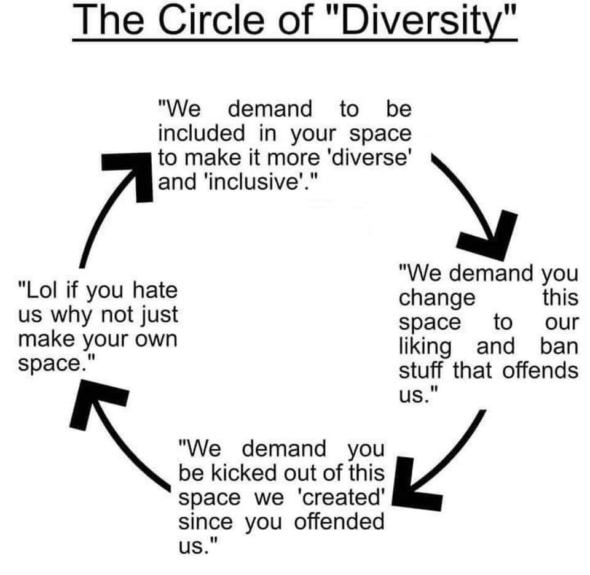
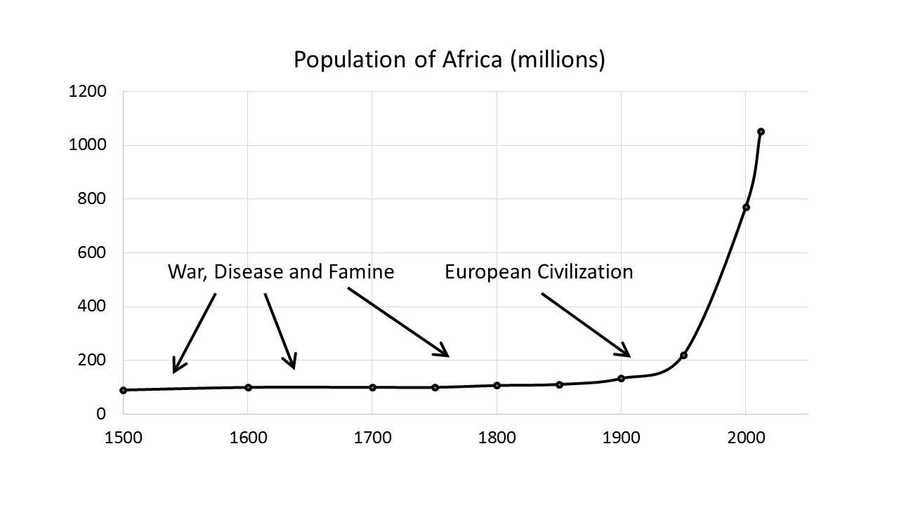

A Rational Analysis of Wokism
The Origin, Problems, and Solutions to Wokism
1. Response To Why We Need to Talk about the Right’s Stupidity Problem by Nathan Cofnas
On 2024 January 2, Nathan Cofnas published the essay, “Why We Need to Talk about the Right’s Stupidity Problem”. It’s long, but it’s worth reading. It has generated many response essays and discussions in the Heretical Sphere of the Internet, all of which I have read before finishing this response:
- A Hereditarian Revolution Won’t Solve The Right’s “Stupidity Problem” - Noah Carl. (the best one)
- Does the Right Have a Stupidity Problem? - Seb Jen. (decent)
- Race, Wokism, and Academia with Amy Wax - Nathan Cofnas. (last 25 minutes were great)
- Anatoly Karlin’s Response. (meh)
- The Intellectual Poverty of Hanania, Karlin, Cofnas, and the Alt-Centre - Imperium Press. (meh)
- Quibbling with Cofnas I: Hereditarianism Yes, Race Realism Not So Much. (meh)
- Race, IQ and the right’s “stupidity problem” - Aporia Podcast (paywalled)
- Will a Hereditarian Revolution Defeat Wokism? With Noah Carl (not much new info)
- Nick Ferrari Challenges Cambridge Academic at Centre of Race Row | LBC Debate
- Necessary Conversations: Eric Kaufmann vs Nathan Cofnas Debate. (no new info, mostly paywalled)
- Victory without a Hereditarian Revolution? - Nathan Cofnas. (opening remarks from debate)
- Classical Liberalism Seminar - September 5, 2024 - Nathan Cofnas. (no new info)
It felt repetitive to read and watch all these responses, but I did it anyway because I want to give Cofnas the best feedback possible and write the most accurate and comprehensive explanation for why Wokism became popular. I also wanted to make sure that I don’t leave any arguments or counter-arguments unaddressed.
There may be other articles that I’m not aware of which respond to Cofnas as well. However, I haven’t seen any response essay that articulates the thoughts, criticisms, or insights that I have in mind. I will cover all these on this webpage.
1.1. Response to the Introduction
In most of the article, Cofnas uses the word “liberal” to refer to leftists, which is common in American usage for referring to social liberals or modern liberals. However, “Liberalism” is usually and traditionally associated with a collection of “political and moral philosophies based on the rights of the individual, liberty, consent of the governed, political equality, right to private property and equality before the law”. I’ve heard that the American usage of “liberal” is uncommon outside the United States, so I prefer to use the word “leftist” as the general term for referring to left-wing political ideologies.
When we understand what wokism is, it will be obvious why it is such a powerful attractor for smart people—at least when the other option is mainstream conservatism.
Wokism is what comes from taking the equality thesis seriously, given a background of Christian morality. If you assume that all human populations have literally the same distribution of innate ability, it follows that all group differences in outcome must be the result of environmental factors. Suppose you truly believe that African Americans and Chinese Americans would on average be equally good at math and equally likely to run afoul of the law if only they were treated the same. With the right intervention, Nigeria could become like Korea, and our inner cities could be transformed into Silicon Valleys—or at least Koreatowns. The persistence of race differences in income, IQ, education, health, crime rates, etc., almost all disfavoring blacks, triggers an increasingly hysterical effort to find and correct the environmental cause.
Cofnas is essentially correct in how he describes and refers to Wokism throughout his essay. However, I would recommend reading What is Wokism? by Blithering Genius. It is the most clear and descriptive definition of Wokism that I have ever seen.
Smart people are disproportionately attracted to wokism in large part because it offers a more intellectually coherent explanation for the major issue of our time, which is the persistence of racial disparities.
I strongly agree with Cofnas that intellectuals tend to be more leftist. I appreciate that Cofnas did a great job on gathering evidence that leftists tend to be smarter than right-wingers in the first section, Liberals Are Smarter: The Evidence.
1.2. Response to Why Everything Goes Woke
1.2.1. Anti-Hereditarian Conservative Positions Against Wokism Are Easy To Defend
In the section, Why Everything Goes Woke, Cofnas attempts to explain why more intelligent whites are more likely to be woke rather than conservative.
Both the mainstream left and right accept the empirical premise upon which wokism is based, namely, the equality thesis. Smart people are more likely to correctly determine that, given equality, wokism follows. Mainstream rightists, in contrast, supposedly believe in equality, but they fail to recognize its implications. Consider the right-wing positions on the following issues:
- Affirmative Action: everyone should be held to exactly the same standard in university admissions and hiring.
- Immigration: it’s important to prevent large numbers of different people from coming into our country.
- Microaggressions: insensitive words and minor slights based on identity aren’t a big deal.
These views are very difficult to defend if all populations are identical.
I strongly disagree that the woke explanation on racial disparities is more logical than the conservative explanation. I’ll proceed to show that the conservative views on these issues are easy to defend, even if they reject hereditarianism and assume that every race has an equally innate cognitive abilities.
If blacks, whites, and Asians have the same potential, then a black person with a 1,200 SAT score can be the intellectual equal of an Asian who scores 1,500 if only we put him in the right environment.
- Why would you be against giving black people opportunities to achieve what they are capable of?
- If lower black performance is the result of injustices of the past, why would you not feel a moral obligation to take measures to correct this?
- In regard to immigration, if all groups are the same, they are equally capable of becoming “American” (whatever that involves). If we open the border to Mexico and Haiti, immigrants from these places can be taught in one generation to be just as high performing as Jews, Chinese, or Brahmins.
- If microaggressions don’t cause tremendous damage to their victims, what’s your explanation for the persistence of racial disparities?
A Conservative’s Response:
- Because
affirmative actiondemographic quotas are incompatible with meritocracy. - There is plenty of clear, reasonable evidence that the Supposed Racial Oppression of Minorities in the United States is a Myth. Past injustices are not the cause of lower black performance.
- Immigration can be reasonably opposed on the grounds that it lowers wages, immigrants are less likely to speak English (or the country’s language), some evidence shows that some immigrants don’t assimilate, etc. There is no evidence that immigration benefits the average citizen.
- Black culture is a superior explanation for the persistence of racial disparities.
The average conservative may not word their responses exactly like this, but most of them would say similar things and give similar reasons to the bullet points above.
These are all reasonable responses, and plenty of intelligent people would agree with them.
Instead, I would suggest a different set of reasons as to why more intelligent people often lean woke humanist.
There are smart conservatives who think that they can square these circles, and I’m not going to argue with them here.
Since writing his first Substack post, Cofnas did a great job at describing, analyzing, and refuting Thomas Sowell’s views on racial disparities, which are held by many conservatives and/or overlap with their beliefs.
1.2.2. Why the Supposed Racial Oppression of Minorities in the West is a Myth
Other authors have written longer and more detailed works on this topic, but this is a short summary.
- “Oppressed” racial minorities aren’t leaving the West. If anything, they’re immigrating to the West.
- The average black or Hispanic person in the West lives a far better life than someone of the same ethnic group who lives in a third-world country.
- The Asian minority in the US used to be very oppressed, but now it’s among the most successful and well-off for its size. If Asians can rise from the bottom to the top, then this is evidence that nothing prevents other minorities from doing the same (if we assume that genetic differences don’t matter).
- Over 50% of black children in the US live in a single parent household, compared to just ~17% of white children (as of 2017). Obviously, this has a huge impact on how most blacks live their adult lives. But how could racism be feasibly attributed to causing most blacks to be raised by single parents, and thus experiencing poorer life outcomes as a result of that? A better explanation is that black people are more likely to be raised by single parents due to genetic factors.
- Since the Civil Rights Act of 1964, black people have had equal legal rights to whites for 50+ years of time (two generations) to recover socially and economically. There are no legal rights or privileges that white people have that black people don’t have. Black people also had a variety of ethnomarxist policies and propaganda, and yet they still don’t have the same prosperity as whites.1
- Police brutality is not unique to black people, and neither is race-on-race violence. However, we do see that white people are attacked by other races more often than white people attack other races.
- All public schools teach their students to believe that discrimination against other races is wrong. If anything, anti-white racism is the most type of racism in the Modern West. Despite that, it’s not uncommon to hear people say that the United States is one of the least “racist” countries in the world.
- Black popular culture is fairly popular among mainstream culture these days. How would it be popular if black people are still oppressed by whites? (Of course though, white culture is still the most dominant because whites are a majority of the American population).
- Historically, American Indians, Native Hawaiians, and others fought lots of wars with each other. So why was it any different when white Europeans arrived to the New World and did the same thing?
- The population of Africa skyrocketed after the Europeans colonized the continent, which implies that European colonization was largely a good thing since it largely ended war, disease, and famine in Africa for the time being.
- The best explanation for different crime rates between different races is different genetics. Races are defined by different genetics, and this is the default conclusion by Occam’s Razor.
In my experience, it has been common to hear political conservatives state points #1 through #9, even if they probably only have average intelligence and reject race realism.
To a large extent, the perception on how much racism/“racism” exists in the United States depends on what people consider to be racism, which depends on a person’s ideology and what they believe. Nevertheless, I’d argue that the more reasonable position is that the United States has really low levels of racism, with anti-white racism being the main exception.
1.2.3. Anti-Hereditarian Conservativism is More Reasonable than Wokism
My point is just that intelligent, thoughtful people are disproportionately likely to recognize the tension between the equality thesis and most right-wing views.
To the contrary, the conservative explanation for racial disparities is equally rational, perhaps even more so. Conservatives have plenty of clear, reasonable evidence that the Supposed Racial Oppression of Minorities in the United States is a Myth. I’ve heard many conservative journalists, news anchors, intelligent people, and average people espouse these facts before (often in fact), so I’m quite surprised that Cofnas would say that the woke explanations for racial disparities are more reasonable than the cultural explanations given by conservatives.
Even if a conservative genuinely accept the equality thesis on race and sex differences, conservatives still have perfectly sound reasons for opposing wokist and leftist policies. Even if a person rejects race realism, the evidence is clear that racism doesn’t exist in the United States on any large scale. If structural racism, microaggressions, and the legacy of slavery and the Jim Crow laws aren’t the problem, then black culture is the best environmental explanation for the disparities between whites and blacks.
Over 50% of black children live in a single parent household, compared to just ~17% of white children, as of 2017 (see other estimates). Cofnas does not mention this at all in his essay, but this is an important cultural issue that cannot be ignored. I grew up in a two-parent household, and I almost can’t imagine just how dysfunctional my upbringing would’ve been if I grew up in a fatherless, single-parent household. This is very strong evidence in favor of a cultural explanation, rather than a structural racism explanation.2 The idea that racism, micro-aggressions, and/or structural racism could be the cause of single parent households and other disparities is insane to me, my former self, and virtually all reasonable people. How could racism cause single parent households?? Clearly, racial disparities have to be caused by black culture, if we reject hereditarianism. There are many other cultural factors that could be considered as well. Thomas Sowell’s arguments resonate strongly with conservatives for a reason.
In a debate with Eric Kaufmann, Cofnas pointed out that lots of intellectuals and people still don’t buy the Thomas Sowell culture theory, which suggests that it’s less reasonable. For many of those intellectuals, I suspect that they want to support woke or social interventions for eliminating racial disparities since virtue-signaling is their way of going through the power process. It would be harder for them to go through the power process if they accepted that black culture is the problem and that they can’t fix it themselves.
There’s also the problem of answering where black culture came from, which Cofnas addressed in comprehensive depth in August 2024. Of course, I don’t believe in Sowell’s answer that black culture came from redneck hillbillies. But if conservatives have answered that black culture is the root cause, and they accept that, then they’ve already solved the problem of justification according to their view and belief network, even if other people don’t agree with their justification.
All the Conservatives know is that when they look at black culture, they see that it’s highly underperforming and decadent. If they can see it with their own eyes (e.g. the high rate of fatherless single parent households), and they don’t believe that genetics or racism is the cause of racial disparities, then they would have to conclude and believe that the culture came from a bunch of redneck hillbillies, by the process of elimination. It may sound ridiculous to other people, but it would still make much more sense than insisting on all sorts of ridiculous and obviously false woke insanity.
If the conservative answer is that white-black disparities come from culture, then that’s not really a problem that white people can fix, assuming a strictly liberal system of government. In their view, that’s a problem that only black people can fix for themselves. Conservatives who don’t support welfare would believe that a child’s parents are the only ones who are responsible for taking of their child. No one would ever support a mandate requiring responsible parents and adults to take care of irresponsible parents’ kids either.3
From 11:34 to 13:43 of this discussion with Noah Carl, Cofnas suggested that it sounds insensitive to say or imply that black culture causes racial disparities. However, I’d argue that it’s equally insensitive for leftists to support affirmative action, since it implies that black people cannot succeed in a merit-based system. Both leftists and rightists say things and support positions that could be interpreted as offensive to the other side, so that argument doesn’t have any explanatory power.
Culture depends on genetics and vice versa. This relationship is known as genetic-memetic adaptive coherence, which is a type of adaptive coherence. For that reason, proving that cultural differences explain racial disparities better than structural racism grants greater credibility to the hereditarian hypothesis. Likewise, the validity of the hereditarian hypothesis grants higher credibility to a cultural explanation.
1.2.4. Right-Libertarians Tend To Be More Intelligent Than Leftists And Wokists
Right libertarians could be described as “socially liberal and fiscally conservative”. Although right libertarians are socially liberal, they aren’t particularly woke. They don’t usually believe in critical race theory, don’t support demographic quotas, don’t support slavery reparations, they support free speech instead of censorship, etc.
Libertarians tend to be even more intelligent than leftists, who are more intelligent than conservatives:
Recent evidence indicates that cognitive ability has a monotonically positive relation to socially liberal beliefs and some measures of fiscally conservative beliefs, and that it has a non-monotonic relation to other measures of fiscally conservative beliefs. This study examines the relationship between cognitive ability and political beliefs in a recent, nationally representative sample of American adults. It finds that cognitive ability is positively associated with both socially liberal beliefs and fiscally conservative beliefs. The relationships with socially liberal beliefs are monotonically positive. In contrast, some of the relation- ships with fiscally conservative beliefs are non-monotonic: Americans of highest ability are less fiscally conservative than those of high ability. The association between cognitive ability and a dimension of fiscal conservatism is reduced substantially when controlling for socio-economic position. – Noah Carl, Cognitive ability and political beliefs in the United States
Kirkegaard has paraphrased these findings:
… intelligence correlates positively with wanting more freedom as in social freedoms (abortions, free speech etc.) and economic freedom (less government involvement), but these two political dimensions are negatively correlated. This brings forth the libertarian high IQ rarity pattern. Because the ideologies are negatively correlated, people who are high in both views are rare, but their IQs are particularly elevated. Noah notes that if you combine the political ideologies into a single component, this correlates .40 with IQ. That’s pretty high!
– Emil O. W. Kirkegaard, Conservatives Aren’t Stupid*
In my experience, people who lean right libertarian (e.g. Thomas Sowell, my former self) are usually aware of the evidence that racial oppression against non-whites doesn’t exist in the Untied States or the West. Likewise, they usually support the cultural anti-hereditarian explanation for racial disparities as well. Right libertarians tend to be more intelligent than both leftists and conservatives, so I’d say that this is further evidence that the woke explanation for racial disparities is not more reasonable than the cultural explanation. These findings are consistent with Noah Carl’s response essay that most cognitive elites are better described as liberal (or humanist), rather than wokist.
As an aside, I hypothesize that non-racist hereditarians are even more intelligent than libertarians. If we had to construct an approximate ranking of the average intelligence among various ideologies, it would probably look similar to this:
- Non-Racist Hereditarians
- Libertarian Humanists
- Humanists
- Wokists
- Christians & Conservatives
- (Stereotypical) Racists
1.2.5. Yes, Most Conservatives Fail the Ideological Turing Test
I will now continue responding to Cofnas’s essay:
Mainstream conservatives are unable to effectively push back against wokism because they accept the premises—both empirical and moral—that entail it. That’s why conservatives can’t describe what wokism is, because that would reveal their own failure to follow their beliefs to their logical conclusion. You can see conservative writer Bethany Mandel’s brain melt like warm ice cream when she is asked to define “woke”. Other conservatives propose vague or tendentious definitions that would never be accepted by wokesters themselves. A recent National Review article titled “It’s Not Hard to Define Wokeness If You’re Honest” says that there are five “core elements” including “Woke ideology obsesses over hierarchies among identity groups” and “Woke ideology aims to be constantly evolving rather than a fixed doctrine”.
I agree with Cofnas that the inability of conservatives to attract smart people to their movement or coherently define wokism is one of their greatest weaknesses. The examples that he gives are a great demonstration of the inability of some conservatives to pass the Ideologial Turing Test, a test that judges whether a person can accurately state the views of ideological opponents to the opponents’ satisfaction.
This is a problem for conservatives, but it’s inaccurate to say that conservatives fail the Ideological Turing Test because they don’t take equality seriously. The real reason why conservatives can’t explain what wokism is because they simply haven’t listened or thought enough about what wokists are saying. Anybody who strongly values equality could coherently define Wokism to the satisfaction of Wokists if they simply took the time to really think about what it is, what wokists are saying, and why they behave the way they do.
See: What is Wokism? - Blithering Genius.
Conservatives cannot actually be honest and admit that wokism is what happens when people are serious about the equality thesis, because they themselves accept–or at least pretend to accept–the claim that all groups are innately the same.
Whatever the case, I disagree that wokists take equality more seriously than conservatives. I think that mainstream leftists and mainstream conservatives both equally value equality. My interpretation is that wokists are just more obsessed about achieving said equality and exaggerating inequality, in part because they reject the cultural explanation that’s favored by conservatives (as well as the even more reasonable hereditarian explanation).
The standard conservative approach to racial disparities is to hope that no one challenges them to provide a serious solution. When they are forced to address the issue, they appeal to their own culture-only theories that do not invoke racism, and which are generally unconvincing to intelligent, open-minded, non-delusional people. Conservatives often blame liberals or Democrats for failed policies that destroyed the black family or caused blacks to choose welfare over work, ignoring the fact that government policies create identical incentives for members of all races. Or they cite Thomas Sowell’s idea that disparities are due to “culture”–a culture that for some reason follows (population-representative) people of certain ancestries wherever they go all over the world, and is impervious to the most extreme interventions, including cross-racial adoption, and which tracks biological markers such as brain size.
I’m not going to explain what’s wrong with mainstream conservative explanations of race differences in detail. For now I’ll just point out that all non-racism-based cultural explanations for race differences have fatal problems that most intelligent people immediately recognize. If it were true that the races were on average psychologically equal, the best explanation for disparities would be the continued existence, or the legacy, of white racism. For this reason, intelligent people tend to choose wokism over mainstream conservatism.
See the previous sections:
- Why the Supposed Racial Oppression of Minorities in the United States is a Myth.
- The Conservative Explanation Is More Reasonable Than The Woke Explanation.
This model explains why virtually all institutions—from the American Ornithological Society (which recently renamed dozens of birds as part of its effort to fight racism) to Harvard to Heterodox Academy–invariably become wokified. Note that this includes institutions (like the aforementioned HxA) they were explicitly founded to promote “free speech” and “open inquiry”. As long as they accept the taboo on recognizing race and sex differences, those on the right—and even anti-woke liberals—are powerless against woke encroachment.
I argue that there’s a more accurate model for why intelligent people lean towards wokism humanism.
We already know why some demographics are more likely to be woke and leftist: Wokism and leftism advocate for their rights over the rest of society. To a great extent, this advocacy and support is motivated by their own selfishness. Demographic quotas benefit Blacks and Hispanics (at the expense of Whites and Asians), women benefit from feminism (at the expense of men), transgender rights benefit transgender people (at the expense of cisgender people), etc. However, we still need to explain why more intelligent whites and more educated people to be more woke as well.
1.3. The Real Reasons Why More Intelligent Whites Tend to be More Woke Humanist
Noah Carl already responded to Cofnas that most cognitive elites are better described as “Liberal”, so I won’t touch upon that. However, I will say that “Humanist” is an even better descriptor than “Liberal” because “Liberal” has a more ambiguous meaning. Wokism and Humanism have a lot of overlap with each other, so we can forgive Cofnas if he confused the two.
Nevertheless, Cofnas correctly identified that white leftists are more intelligent than white rightists. Since the conservative environmental explanation for racial disparities is more reasonable than the wokist environmental explanation, we still need to explain why intelligent whites are more likely to be woke or humanist, rather than right-wing. There are at least five better explanations that I can think of:
- Humanism and Wokism vs Christianity and Conservatism.
- The intellectuals don’t want to be associated with whomever the racists support.
- Why Humanists Support Mass Immigration.
- Altruism, Hedonism, and Gay Marriage.
- Social Feedback Loops.
I will elaborate on each of these in the next five subsections and my personal experiences.
1.3.1. Humanism and Wokism vs Christianity and Conservatism
Most atheists, secularists, and former Christians are Humanists. Humanism is the dominant ideology of the Modern West. Wokism has Humanist origins, and Humanism has Christian origins. The three ideological groups each overlap with each other, so I’ve done my best to summarize the differences between them. Social Liberalism is Wokist and/or Humanist, whereas Liberal Conservativism is Christian.
According to Wikipedia, the relationship between religiosity and intelligence is unclear and inconclusive. There are different definitions, different measurements, and multiple variables regarding studies on this issue, so it’s difficult to determine what the exact relationship is between religiosity and intelligence. I don’t have the time to do my own data analysis, but I do know of: Meta-Analysis 1, Meta-Analysis 2.
As Cofnas said, stereotypes tend to have some truth to them, so my belief is that there is a positive correlation and a causal relationship between higher intelligence and atheism. If so, then intellectuals are probably more likely to be atheist because they can recognize the contradictions of religion (e.g. the Inverse Homunculus Fallacy). More intelligent whites are thus more likely to be woke and leftist because Humanism and Atheism are more logical than Christianity and religion.
Rejecting Christianity usually entails being pro-choice on abortion, not opposing gay marriage, greater support for feminism, greater support for mass immigration, lower opposition to trans ideology, lower support for illegalizing other victimless crimes, and many other social positions. It’s not surprising that whether a person is Christian or not is one of the strongest demographic predictors regarding whether a person is more likely to vote for Donald Trump or Kamala Harris. Noah Carl agrees with this analysis. Many regions across the world are much more religious than the Modern West, so a high prevalence of religion likely prevented those countries from becoming woke, among other factors.
1.3.2. Intellectuals Don’t Want to be Associated with Whomever Racists Support
It’s well-known that white supremacists, white nationalists, and other race idealists are more likely to be politically conservative nowadays. Whenever a “far right” politician runs for office in the West, you can be guaranteed that one of the first talking points that leftists will make against them is that they are supported by racists, white nationalists, white supremacists, etc. I have easily seen hundreds of leftists and news articles point out how white nationalists, white supremacists, the KKK members, etc have strong support for Donald Trump’s campaign.
In “A Guide For The Hereditarian Revolution”, Cofnas recognized that most racists have low intelligence:
Imperium Press says: “It’s not clear what Cofnas wants to put in place of colourblind liberalism, but one can only assume that it is a form of race realist liberalism. He explicitly forecloses on the possibility of incorporating the identitarian right.” (The last claim is based on my observation that currently self-identified race realists are mostly low-IQ, anti-Semitic white nationalists.)
…
And the historical record suggests that white nationalism is invariably expressed mainly as negativity toward other races and perceived enemies within the “white” race, which is not something I find attractive. A generation of Internet white nationals has produced tens of millions of pieces of racist online content, but zero great works of music, art, or literature, and a relatively small amount of high-quality scientific analysis. Despite their claimed love of classical music, there isn’t a single well-known, white-nationalist classical performer, let alone composer. This is not the community that is carrying the torch of Western civilization, as I understand it.
I couldn’t agree with Cofnas more. However, intellectuals tend to be leftist for similar reasons. They believe that racism is irrational, and they oppose right-wing politicians because they are supported by white supremacists, which are historically associated with Nazis. The woke desire to never be associated with the racists under any circumstances can be modeled with information theory. I’ve transcribed (and lightly edited) Blithering Genius’s brilliant explanation from the audio recording, Rational Humanism Discussion, with the following timestamps:
1:24:49: You can think about this in terms of information theory. That is if you have a simple judgment about something, if it’s good or bad, then that’s simple and easy to think about, so flipping the bit doesn’t require a lot of mental effort. But in order to maintain the bit in an indeterminate and more nuanced state, that is more cognitively expensive, so almost all of our heuristics that we call irrational are really just ways of limiting complexity. …
1:25:43: And this is why things like anti-racism don’t work. They don’t stay anti-racism. Instead they become anti-white. You could tell people “Just leave that bit in an indeterminate state, don’t let race enter into any of your thoughts, just treat people as individuals.”
1:25:57: But the problem with this is that you are asking them to magnify the complexity of their way of understanding the world and to maintain their minds in a state of what is confusion and uncertainty (to them), so there is a natural tendency for them to just want to simplify this stuff.
1:26:18: Instead they’ll simplify and think “Okay, now, white people bad. It’s simple. White people bad, black people good. Now I know what to do, I should always be on the side of the black person. I should always take the side of the primitives or Nature.” And that’s how you lose nuance, and thought, and rationality. – Blithering Genius, Rational Humanism Discussion
This explains why the socially liberal 1960s opposition to racism gradually evolved into oblivious anti-white racism. Anti-white racism is not associated with moral narratives, like the history of slavery, the Jim Crow laws, European colonialism, Nazism, or the Holocaust, so it’s harder for people to notice it.
As Cofnas has noted, the historical association with racism/“racism” and the overlap among many racists and race realists is also the main reason why intellectuals tend to oppose race realism. Blithering Genius and I have written a lot about the fallacies of white nationalism and race idealism.
1.3.3. Why Humanists Support Mass Immigration
As mentioned before, intellectuals don’t want to be associated with the racists. The stereotypical white supremacists and nationalists oppose foreign immigration into Western countries, so this causes the somewhat smarter white people to support immigration instead. That’s why “racism” accusations are always one of the first reactions that leftists make to right-wingers who want less foreign immigration, or even just legal immigration (as opposed to illegal immigration).
There is also a lot of propaganda, lies, and fake academic research out there about how all immigration benefits the economy, how diversity is good, etc. Pervasive propaganda prevents smarter people from understanding how unregulated mass immigration is harming Western countries.
I also mentioned that Humanists are less likely than Christians to favor punishing victimless crimes. Humanists tend to view immigration as a victimless crime, so they’re less likely to oppose immigration. Their core values of hedonism and altruism also cause them to support immigration, two-fold.
It could also be that more educated people are more aware of how the United States and the rest of the Americas have a long history of immigration, mostly from Europe. Most Americans are descended from immigrants, many of whom faced discrimination, so people who believe in moral consistency may conclude that supporting mass immigration is consistent with morality. In hindsight, the historical racism against immigrants in the past is now viewed as wrong, so the humanists now intuitively view racism and opposition to new immigrants to be wrong as well.
Europe didn’t have a history of recent immigration to the continent prior to the 1960s, but Europe had a history of colonizing the rest of the world. Woke Europeans who are obsessed with moral consistency might pattern match that Europe thus has a moral obligation to allow non-Europeans to immigrate to Europe. In their view, this would be a way of repaying the moral debts that Europeans had set via their historical colonialism. These reasons all explain why intellectuals tend to be more supportive of mass immigration, and thus more supportive of wokism.
1.3.4. Altruism, Hedonism, and Gay Marriage
As Blithering Genius has explained, support for gay marriage is consistent with the humanist cultural values of hedonism and altruism.
Our culture views emotions as the ultimate source of value.
The implicit value theory of the modern West has two core values:
- Hedonism: Pain is intrinsically bad for the experiencer, pleasure is intrinsically good for the experiencer, and nothing else is intrinsically bad or good.
- Altruism: You should help others and avoid harming others, even at some cost to yourself.
Hedonism defines personal good and bad for the individual. Altruism defines moral good and bad, which depend on personal good and bad.
To the hedonist, emotions are the ultimate source of value, because emotions generate pain and pleasure. The purpose of life is to affect emotional experience: to feel more pleasure and less pain.
Although our culture recognizes some pathologies of emotion, this recognition is not based on biological functionality, but on an implicit value theory.
For example, our culture pathologizes pedophilia but not homosexuality. Why? Because pedophilia violates the principle of altruism. If acted upon, pedophilia harms children physically or psychologically. So, our culture views pedophilia as a disorder and/or as evil.
By contrast, homosexuality is not pathologized by our culture, because it does not seem to conflict with the norms of hedonism and altruism. It seems that homosexuals can pursue happiness in their own way, and they are not harming anyone else by their actions.
There are other examples. Our culture pathologizes depression, because it seems to conflict with hedonism. Our culture also pathologizes hate, because it seems to conflict with altruism. – Blithering Genius, Parasites, Emotions and Identity
The rejection of religion and the compatibility of gay marriage with the main cultural assumptions of the West (hedonism and altruism) are the main reasons why intellectuals are more likely to support gay marriage, and hence support other woke positions.
1.3.6. My Personal Experiences With These Topics
This section describes my personal experiences with the aforementioned topics over the past decade, as of 2024. My commentary might give some insight into why highly educated demographics lean towards Humanism and Wokism, but people who aren’t interested can skip ahead to: Why Race Realism Is Not Enough For Fully Expanding Rationality.
1.3.6.1. The Intellectuals Don’t Want To Be Associated With The Racists
I was politically conservative during my teen years (prior to July 2017). I eventually became Humanist and Libertarian, but I never became woke. I supported Donald Trump during the 2016 election, though I wasn’t old enough to vote. I was well-aware that all the white nationalists and supremacists were on Donald Trump’s side because that was usually one of the first responses I heard from my interlocutors. However, I knew that a racist supporting a candidate does not mean that the candidate is bad. I understood that asserting otherwise is a Guilt by Association Fallacy.
Back then, I was also aware of most of the evidence that the United States does not have structural racism. I knew that racism did exist to some extent in the US, and thus may have partially contributed to racial disparities, but I also knew that it was not the main cause. I had never observed any racism between whites or blacks in real life, nor had I personally heard about it from other people, even in a majority white state that would supposedly have a lot of racism and prejudice against blacks, due to not being around enough blacks to realize that they are also humans like the rest of us. I also rejected a genetic explanation for racial disparities in favor of nurture-based, environmentalist causes, because I was indoctrinated to by the public school system to believe that the genetic explanation is “racist”. (even though it isn’t)
1.3.6.2. Why Humanists Support Mass Immigration
I had always intuitively opposed immigration until 2017. I strongly opposed all the immigration to Europe during the 2015 European migrant crisis. However, I became more supportive of immigration after taking my high school and college history classes, taking Spanish classes, gaining intermediate fluency in Spanish, and binging Wikipedia. Eventually, I got bachelor’s in linguistics, since I like foreign languages so much. Linguistics is one of the most woke academic fields out there, and admittedly, some of that rubbed off on me.
The same occurred when I learned the genealogy of how my Scottish and Japanese ancestors immigrated to Canada and how my Cantonese, German, Swiss, and Canadian ancestors immigrated to the United States. In 2017, my mother’s father told me that his father was born in San Francisco in 1883, a year after the Chinese Exclusion Act was passed in 1882. I later verified this and other claims with census records.
I also heard testimonies of how my Cantonese ancestors faced racism in the US and how my German and Japanese ancestors faced anti-German and anti-Japanese racism after WWI and WWII. When I learned that the Americas had a history of being a country of immigrants (many of whom faced discrimination), and that my own ancestors were also immigrants, it became increasingly difficult for me to reconcile being anti-immigration. And as I wrote before, there is also a lot of propaganda out there about how all immigration benefits the economy, how diversity is good, etc.
Although conservatives tend to oppose immigration, libertarians are pro-immigration. This was one reason why I eventually rejected conservativism in favor of libertarianism. However, other people might be inclined to instead choose leftism or wokism instead, if they reject the political and economic philosophy of libertarianism, which I did not.
Nowadays though, I no longer support mass immigration. This is partly because I accepted race realism in December 2021. I’ve heard Lauren Southern make this argument once, but it’s true that most of today’s immigrants to the West are not the same as the European immigrants who migrated to the Americas between 1500 and the 1960s. Wokists don’t fully understand the implications of that truth.
1.3.6.3. Altruism, Hedonism, and Gay Marriage
I am completely heterosexual, so I naturally perceive homosexual intercourse to be disgusting. For that reason, I used to oppose gay marriage, since that opposition was compatible with my natural intuitions. However, I’ve been atheist for as long as I can remember, so it was easy for me to eventually support gay marriage in 2015-2016, since it was consistent with my old values of humanism and altruism. This is one reason why I eventually decided that libertarianism is more rational than conservatism in 2017.
Nowadays, I don’t oppose gay marriage, and I don’t believe that it should be outlawed either. However, I don’t believe that a rational society should celebrate homosexuality. I value reproduction as one of my core values, and I recognize that homosexuality is maladaptive.
I’ve written a speculative essay detailing a potential connection between unidentified pathogens and male homosexuality. I believe this possibility is worth investigating, but I also don’t believe that it would explain a majority of homosexual men, let alone bisexuals and homosexual women. If it is ever proven to be true, it would raise a lot of philosophical questions, and would drastically damage the public perception of wokism.
In 2020-2021, I finally realized that I’m autistic and I figured out the autism runs in my family. I also started to think about promoting activism in favor of raising awareness and supporting neurodivergent people or otherwise disabled people. I believed that raising awareness about the genetics of autism and identifying neurodivergent people earlier on in their lives would help them better succeed in life. Nobody ever explicitly identified me as autistic until I did so myself in 2020, and I believe that this had set me back in life. My views on neurodiversity, awareness, and activism are quite different and more practical these days, but this is another reason why humanism seemed appealing to me before I discovered biological realism and adopted a new theory of society.
1.4. Why Race Realism Is Not Enough For Fully Expanding Rationality
Technically wokism is about more than race and sex differences in outcome: it’s also associated with gender theory (the idea that your gender is whatever you feel like), safetyism, and some other views. But what is distinctive about wokism mostly traces back to race. Race denial destroyed people’s ability to think biologically, thus making them open to radical, social-constructivist views on gender. Part of woke morality, including an emphasis on feelings and safety over free speech, is simply the result of the feminization of our institutions, which was more or less inevitable as women were integrated into schools and workplaces. But the essence of wokism is the equality thesis about race and sex. Wokism could survive a backlash against gender theory. If we kept gender theory but turned hereditarian about race differences, wokism would be over.
Cofnas is essentially right about this. Race realism is the most important and pivotal type of biological realism. Anecdotally, I’ve heard many biological realists say that accepting race realism was the turning point that caused them to accept all the other types of biological realism. Accepting or rejecting race realism has a profound impact on a person’s worldview.
However, I want to be clear that promoting race realism alone is not enough for truly understanding human nature and building an optimal, or even a functional society. There are many smart and dumb race realists out there who still believe in erroneous, ridiculous nonsense about biology, such as the following ideas and people:
- Gene or Group Selection Theory (e.g. Thuletide)
- Kin Altruism (e.g. Emil O. W. Kirkegaard)
- Collectivism (e.g. Race Idealists)
- r/K Selection Theory (e.g. Race Idealists)
- Cornucopianism (e.g. Cremieux Recueil)
- Immortality (e.g. Anatoly Karlin)
- Game Theory Denialism (e.g. Stefan Molyneux)
It is important that people accept race realism, but people also need to understand all of biological realism. If people don’t understand that humans are individually selfish, then we won’t be able to (optimally) solve the problems of cooperation that every functioning society must solve. If people don’t understand that overpopulation is inevitable without either: 1. high mortality rate, or 2. low and/or sustainable birth rate (which may be accomplished via population control), then we’re going to get mass death and the permanent collapse of modern civilization. Most people would prefer eugenic population control instead if they understood this. Reproduction licenses are the only workable long-term solution to overpopulation and dysgenics. Unfortunately, a majority of race realists don’t understand this.
Read More: Essays On Biological Realism and Evolution.
Read More: Zero Contradictions’s FAQs Pages.
1.5. Response to The True Origin of Wokism
The next section of Cofnas’s essay is: The True Origin of Wokism.
The central tenet of wokism, namely, psychological equality, was first expressed by the English philosopher John Locke in 1690. Locke—the father of both blank slatism and political liberalism—declared that the human mind begins as “white paper, void of all characters”.
…
In other words, race differences are environmental. In 1758, Claude-Adrien Helvétius, who was arguably more influential than Jean-Jacques Rousseau in the decades preceding the Revolution in France, developed a radically egalitarian political philosophy based on Lockean psychology. Another English philosopher, John Stuart Mill, may have been the first liberal in a semi-contemporary sense, and he was a Lockean with respect to group differences. In 1848, he wrote that “attributing the diversities of conduct and character to inherent natural influences” is the “most vulgar” way of “escaping from the consideration of the effects of social influences on the human mind”. In 1873, he wrote that “by far the greater part of those differences, whether between individuals, races, or sexes”, are “produced by differences in circumstances”.
Other 19th- and early 20th-century liberals and radicals converged on similar conclusions. Alfred Russel Wallace, who independently discovered the principle of natural selection and coauthored the first paper on the theory of evolution by natural selection with Darwin in 1858, was a socialist who claimed that intelligence is equal among all races. In 1859, the German scholar Theodor Waitz published On the Unity of the Human Species and the Natural Condition of Man, which argued that all people are “equally destined for liberty,” and differences between them are not innate but “something acquired in the course of their development, which, under favorable circumstances, might have been equally acquired by peoples who appear at present less capable of civilization”.
The idea of racial sameness was picked up by the Christian abolitionists in America, who used it to argue against the view that blacks are by nature suited for slavery. By the 1880s, if not earlier, race denial was beginning to crystalize as the orthodoxy among liberal intellectuals. Its attraction was mainly ideological. Blank slatism justifies the utopian aspirations of intellectuals.
This information indicates that many people intuitively thought that humans of all races have the potential to be equally intelligent, even before wokism arose. While these authors and claims are notable for the history of the Western belief in equality, I don’t think any of these authors have been particularly important for explaining why wokism became popular in today’s world. I doubt that most people or most wokists would be able to name most of these historical figures.
The trend toward race denial in academia was driven mostly by ideology, and also by the professional interest that anthropologists and sociologists had in deemphasizing biology in favor of culture. In the early to mid-20th century, celebrity anthropologists like Franz Boas, Margaret Mead, and Ruth Benedict argued strongly against race as an important explanatory variable in social science. (Boas himself acknowledged the existence of innate physiological differences in the brains of blacks and whites, which he thought had implications for intelligence. But he wrote these differences off as not very significant.)
Indeed, this is the case with all academic subjects.
After World War II, the association of “race science” with Nazi pseudoscience and genocide gave the moral high ground entirely to the race deniers. Most people don’t make a strong distinction between empirical and moral questions, and when morality conflicts with science, science usually loses. The civil rights movement aroused justified sympathy for the plight of blacks, who had been seriously oppressed. By the time major civil rights legislation was passed in the 1960s, respectable people had almost unanimously embraced the fantasy that legal equality would solve the race problem. Idealistic school teachers inculcated children with the dogma that race is skin deep, and that only a deranged hater could think otherwise. Once a taboo becomes established, it is very difficult to undo it. Full-blown wokism was inevitable.
This paragraph indicates that Cofnas was aware of how Nazism helped cause modern wokism, but I don’t feel that he emphasized this turning point strongly enough in his essay. While Cofnas talked about the historical origins of the intellectual belief in equality in the West, he didn’t talk at all about how Social Darwinism and eugenics also used to be historically widespread values among the West’s intellectuals in the early 1900s. Social Darwinism was largely motivated by accepting traditionally adaptive values and the implications of the theory of evolution that Charles Darwin described in The Origin of the Species. Cofnas’s theory of wokism doesn’t explain how the value in equality eventually dominated and defeated Social Darwinist values.
This is all really important. A proper theory of wokism has to explain why the belief in equality won out. There are other reasons why equality is a common moral value. But the Holocaust, the defeat of the Nazis, and the baby boom that caused the 1960s counter-culture were the most pivotal series of events that set humanity on full course for Wokism. If that series of events had never happened, wokism may never have happened either. At the very least, it certainly would be the same set of delusional beliefs that we see today.
1.6. Response to What to Do
The last section of The Right’s Stupidity Problem is “What to Do”:
In my article, “How to Take Back Academia”, I proposed a three-part plan:
- Promote knowledge of the cause of race differences.
- Change the population of decision makers on campus.
- Leverage political power.
I agree with Cofnas’s plan, but I also believe that there are multiple other reforms that could be done to fix academia. My essay also describes other ongoing problems in academia, and it’s necessary to understand those as well, if we are ever going to fix them.
Promoting knowledge of the genetic cause of race differences destroys the premise of wokism, but this is not enough to attain victory. Our institutions are brimming with delusional–and in many cases mentally ill—true believing Red Guard thugs who were appointed to maintain the ideological status quo. Many of these people will fight to the gates of hell to defend the woke system, and won’t accept evidence for hereditarianism no matter what. We need to find legal ways to remove these people from positions of authority: get rid of fake grievance-studies departments at universities; revoke the tenure of pseudoscholars who were hired in job searches that illegally discriminated against whites, Asians, and men; mass fire the woke commissars in the state department; and so on. We have to leverage political power both to change the population of decisions makers and in order to deprive the woke of one of their most powerful weapons, which is civil rights law. The law might not be the ultimate cause of wokism, but as long as it’s illegal not to be woke, it will be far more difficult to reform our institutions. – Nathan Cofnas
Cofnas acknowledges that hereditarianism won’t be enough to end wokism. I couldn’t agree more. I also like this paragraph so much that I edited my academia critique page to quote it there too.
Rufo is the most effective activist with respect to getting rid of wokesters, and he is pushing lawmakers in the right direction. Hanania’s book is the ultimate guide for how to reform the law. But the anti-woke trident doesn’t work without its first prong: we must destroy the taboo against hereditarianism, and teach people not to seek scapegoats for differences that are the product of nature.
It’s actually much more complicated than this. There are multiple other barriers to ending wokism besides just ignorance. I’ve also proposed solutions for solving each of them.
That’s because a large proportion of race realists—especially those who are willing to admit it–are not actually “realists”. Many of them subscribe to a right-wing version of wokism that substitutes Jews for whites. They cherry-pick, misrepresent, or simply misunderstand findings in psychology and genetics to support their ideological views. My call for a race-realist right is not a recommendation to look to these emotionally disturbed fools for leadership or support. Race realism needs to be incorporated into the right from the top. The priority for right-wing intellectuals should be disseminating accurate information about race and race differences, and devising a new political philosophy that is intellectually and morally appealing to the current left-wing elites.
I’m really glad that Cofnas and I both agree on a non-racist perspective of race realism and that we both stand against race idealism and the ridiculous Jewish Conspiracy Theory. It’s rare to find someone with strong opinions on race who favors a truly meritocratic system of government, especially someone who likes both philosophy and biology. I wish there were more people out there like us.
Meritocracy is a hill that I am willing to die on. Unfortunately, race denialists don’t believe meritocracy, because they believe in holding back relatively successful demographics, like Whites and East Asians. Also unfortunately, racist race realists (and especially racists in general) don’t believe in meritocracy either, because they believe in holding back exceptional people who come from underperforming races. Non-racist race realists are the only ones who fully embrace meritocracy. – Zero Contradictions, Race FAQs
Also see: ZC’s Response to A Guide For The Hereditarian Revolution by Nathan Cofnas.
2. Wokism
2.1. What is Wokism?
“What is Wokism?” by Blithering Genius is an accurate and concise description of Wokism. I don’t want to regurgitate what he’s already written, but anybody who’s interested in this topic should read his essay. Instead, I’ll just summarize the wokist and social constructivist line of reasoning:
- We are separate from other animals (and nature) due to the development of culture.
- Culture is the primary factor for conditioning our behavior (blank-slatism).
- The current culture results in inequality, and thus oppression.
- We have to eliminate inequalities.
- We can greatly reduce division, hatred, and inequality from society if we change the culture.
- Thus, we need to change the culture.
The main fallacy in this line of reasoning that is that inequality results from nature, not culture. It also assumes that we have obligations to make everybody equal and to relieve everyone’s suffering. Wokists are optimistic because they think that it will be easy to change the culture, but they’re unaware that culture depends on the genetic traits and evolutionary psychology of a population. Nature and biology are inherently inequitable.

It’s interesting to wonder about what other ideologies could’ve become particularly influential today if Humanism and Wokism didn’t become the main ideologies of the West. At various points over the last two centuries, there were opportunities for other ideologies to become more popular and influential instead:
- Christianity *
- Nationalism
- Social Darwinism *
- Communism *
- Classical Liberalism
- Individualism
- Et Cetera
The rise of modernity was caused by a feedback loop of many different processes that happened and amplified each other simultaneously. The same also applies for the rise of wokism.
2.2. Published Theories on the Origins of Wokism
There are various theories about the rise of wokism that can be summarized as follows. The first three theories were featured in an image from “Why We Need to Talk about the Right’s Stupidity Problem” by Nathan Cofnas, while I added summaries for the last two:
- Christopher Rufo: Critical Theory -> “long march through the institutions” -> Wokism
- Richard Hanania: Civil rights laws demand nondiscrimination -> judges and bureaucrats declare disparities to be evidence of discrimination -> legal bureaucracy enforces civil rights laws -> Wokism
- Nathan Cofnas: WEIRD morality & belief in psychological equality & intractable group disparities -> elites become woke ->
- -> woke philosophy -> children indoctrinated with woke ideology -> Wokism
- -> woke law -> law reinforces institutionalized wokism -> Wokism
- Edward Dutton, et al: New technology -> increased survival rates, people have children at later ages -> mutations accumulate in human genome at unprecedented rates -> high mutational load -> Wokism. This is called the Mutational Load / Spiteful Mutant Hypothesis.
- Ted Kaczynski: New technology -> life becomes easier -> people no longer have to focus on their survival or work as much -> people need surrogate activities to fulfill meaning in their lives -> people engage in activism to fulfill power process -> over-socialization feedback loop occurs -> Wokism. This could be called the Power Process, Surrogate Activity, and/or Over-socialization Theory.
Cofnas already did a great job at explaining the problems with Rufo’s and Hanania’s theories, so this webpage will focus on addressing the other theories. Each of these woke origins theories contribute some important points, but they each ultimately fail to fully recognize the historical context and background regarding why critical theory, WEIRD morality, and wokism evolved in the first place (the causes of 1960s counterculture, anti-Nazism, etc). None of the theories adequately describe the memetic processes that propagate wokism either.
It’s likely that genetics and mutational load are partially responsible for causing a minority of woke people to be woke. However, I strongly disagree with the Mutational Load Hypothesis that genetics was the main factor that caused so many people to go woke. It simply doesn’t fit the evidence. The rise of wokism occurred within just a few decades or so among such a large number of people, so our heuristics regarding differences between people inform us that wokism is probably mostly environmental, rather than mostly genetic. As we shall see, there were multiple environmental causes and feedback loops that amplified each other’s influence, so an environmental hypothesis better fits the evidence.
The theory that Ted Kaczynski proposed in Industrial Society And Its Future (1995) is the oldest of these five explanations, but I’d say that it’s the best one, especially for its time. He missed some important details (anti-Nazism backlash, higher birth control access, etc), and his description could be improved, but he did a great job at describing wokism and why it occurs, especially when terms like “woke” and “virtue-signaling” didn’t exist yet when he wrote his manifesto. He doesn’t describe his theory on the origins of wokism concisely in the manifesto since he wanted to spend a lot of words describing and criticizing leftism/wokism and since that wasn’t the main goal of the manifesto. Nevertheless, sections 2-6 and 26 explain most of his theory, with section 4 “Over-Socialization”, section 5 “The Power Process”, and section 6 “Surrogate Activities” being the most important.
When most people and most normies talk about Ted Kaczynski, they tend to talk about his criminal record, his ability to evade the FBI and law enforcement for so many years, his life story, condemning his actions, recycled jokes about being placed on an FBI watch list, dismissing his ideas with irrational arguments, and lots of false and inaccurate information (e.g. “Kaczynski was an anarchist”, “Kaczynski had schizophrenia”, “MK Ultra ruined his life and turned him into a terrorist”, etc). Most people who talk about him have never read his manifesto or his Wikipedia article, and far fewer people have any interest in his philosophy and ideas.
While Kaczynski has an interesting life story, it’s unfortunate that most discussions about him don’t focus on the ideas of his manifesto.4 In my opinion, Industrial Society and Its Future is one of the greatest philosophy essays ever written in human history. While I strongly disagree with his visions for an ideal human society and don’t believe it would be stable, I liked his essay so much that I decided to host it on my site. Unlike other copies of his manifesto, my version has improved navigation and hyperlinking that isn’t found in other versions.
2.4. My Timeline And Theory For Why Wokism Became Popular
The following is an outline of events throughout the 20th and 21st centuries that lead to the rise of Wokism:
2.4.1. The 1900s to the 1960s: The Rise of Humanism
This era featured the most important series of events that made Wokism inevitably. The early to mid-1900s exhibited the downfall of Social Darwinism and Christianity, and the Rise of Humanism.
- Christianity was initially the dominant moral belief system of the West for a couple millennia.
- The Frankfurt School originated in Germany during the 1930s Weimar Republic, which later laid the foundations for Critical Theory and Postmodernism. The Frankfurt School is mainly notable for being the first historical roots of wokism in academia, but it wasn’t very important for shaping wokism compared to the other points on this list.
- The conclusions of WWI and WWII caused the popularity of Nationalist ideologies in Europe to decline. The decolonization of the world following WWII and the shift to focusing on the Cold War between Capitalism and Communism further weakened nationalist attitudes and ideologies in Europe.
- The Allies defeated the Axis Powers in WWII, which lead to the downfall of Social Darwinist beliefs and ideas (e.g. eugenics, racial supremacy, etc), due to their association with Nazism. The Axis Powers were the “evil” side, so heavy war propaganda and victory propaganda flourished throughout the West to legitimize the victory of the Allied Powers. A sharp cultural backlash of anti-Nazi values and ideology gradually ensued throughout the West since nobody wants to be accused of being a Nazi. The Holocaust became a sacred moral narrative.
- The aftermath of WWII and the baby boom generation caused the greatest cultural turning point of the 20th century, the 1960s Counterculture Movement, which ignited the rise of Wokism and Humanism.
- The increasing availability of the birth control pill and other types of contraception in the 1960s and beyond lead to the Sexual Revolution, which caused the rise of Feminism.
- The fall of Christianity caused more people to lose their sense of purpose in life. Fewer people were propagating Christian memes, so this created a vacuum that caused people to spread and exchange other memes instead, to fill the loss of purpose in their lives.
- Humanism arose in the late 20th century, as a secular replacement to Christianity.
Humanism replaced God with Humanity, and (to a lesser extent) nature, as the focus of worship.
- Humanism transferred divinity from God to Humanity.
- The omniscience of God was transferred to Humanity as faith in reason and science.
- The omnipotence of God was transferred to Humanity as faith in technology and progress.
- The benevolence and moral authority of God was transferred to Humanity as faith in human empathy, compassion, and altruism.
– Blithering Genius, Soulism
- Humanism inherited the moral, mythical, and conceptual (sub)structure of Christianity, while rejecting God and traditional religions. Also see: Christianity, Humanism, and Wokism.
- This explains why altruism was historically a core Western value, despite conflicting with the imperialist, nationalist, Social Darwinist ambitions of the West during the late 1800s and early 1900s.
- Homosexuality thus became less taboo, the Western left became more accepting of Muslims, etc.
- Humanism was influenced by the need for equal representation, which became apparent for the first time in Western culture after the passage of the Civil Rights Act of 1964. There are various reasons why people often value equality among their fellow citizens.
2.4.2. The 1970s, 1980s, and 1990s: Technological, Demographic, and Social Changes
- The Immigration and Nationality Act of 1965 enabled more non-Western immigrants to migrate to the United States, which changed the demographics of the US to favor more leftist and wokist causes. Similar immigration reforms in other Western countries had similar social effects. Mass immigration has made Western countries more collectivist, and it is continuing to do so.
- The prosperity of the West, technological advancements, the end of slavery, the defeat of the Nazis, and the success of the Civil Rights Movement and other counter-culture movements created the illusion of “moral progress”. This created the folk theory for woke morality.
- Advancements in household technologies throughout the 20th century, especially during the Roaring 20s and the baby boom generation, made it easier for women to do housework in less time, which partially filled a void in the power process.
- Women enter the workforce and secondary educational institutions in gradually increasing numbers over the years, thus increasing the demand for feminism and other wokist causes. It’s important to note that this wouldn’t’ve been possible if it wasn’t for the increasing availability of the birth control pill and other types of contraception during the 1960s.
- People became increasingly alienated from the modern world, due to the rise of fake information and alienation created by mass media and technology. Much of this fake information and the morals instilled through the mass media caused/cause people to adopt and favor more humanist values.
- Technological advancements caused people to be unable to experience the power process, so people started engaging in woke activism, as a surrogate activity for creating meaning in their lives.
- There may be some truth that the rising mutational load in the human genome is causing some people to be more predisposed towards wokism, but if so, then this would be a minor factor.
- Western society has also been getting less intelligent and more dysgenic since the mid-1800s.
- The prevalence of wokism among actors, musicians, and artistic peoples, and the high heredity of such traits from parents to children is further evidence that wokism has a genetic component.
- The fall of the USSR ended the Cold War and shifted the public’s attention towards other political issues. It became more socially acceptable to promote socialist and communist ideas in the West.
- Climate change became politicized and moralized for various reasons. Overpopulation concerns lost their popularity after the 1960s and 70s, which contributed to people fearing climate change more.
2.4.3. The 21st Century: The Emergence and Acceleration of Wokism
- Humanism gradually penetrated Hollywood, entertainment and news media, and academic institutions. See: The Real Reasons Why More Intelligent Whites Tend to be More Humanist for the ZC explanation why the West’s cognitive elites (and hence the Establishment) gradually embraced Humanism.
- The existence of racial, sexual, wealth, etc disparities justified and strengthened woke activism and support for demographic quotas, with the goal of eliminating said disparities.
- Virtue-signaling and woke advocacy became a way for various factions to maximize their entitlements and minimize their obligations to the rest of society. Whether wokists realize it or not, most virtue-signaling is motivated by psychological selfishness and power hunger to some extent.
- Gay marriage is a great example. Gay marriage wasn’t really about gays wanting to marry, for the most part. The vast majority of gay people still aren’t married (~90% as of 2022). Gay marriage was more about conquering the sacred institution of marriage, in favor of Wokism.
- The most important thing about gay marriage was that everyone must agree that gays are equal to heterosexuals. Everyone must submit to the wokist value system, or they’re evil.
- The same applies for feminism, transgender rights, poor people and welfare, etc.
- Letting people do whatever they want as long as it doesn’t harm others became a cultural adaptation for making society function more smoothly with fewer interpersonal conflicts.
- This partially explains why soulism became more popular than worldism.
- Morality and politeness are also examples of cultural adaptations, which are not selected to benefit a single individual. Similarly to language, they all emerge in a social context.
- Political and financial institutions later became compromised as well, since it was (and still is) socially advantageous to virtue-signal for higher social status, better approval, etc, even if it leads to pathological altruism for the rest of society.
- The establishment media became more partisan in the 2000s. Fake news tactics help propagate wokism and reinforce the beliefs of its believers.
- Political campaigns start using intensive data analytics to improve their advertising effectiveness. This is one reason why the Obama campaign was so strong and effective in 2008. Eventually, other political campaigns started copying the Obama 2008 strategy, because it works.
- The public’s connectivity to the Internet gradually rose in the 1990s, 2000s, and 2010s. Likewise, the rise of smartphones and social media created lots of social groups to which people could conform to, which exacerbated the rise of wokism and increased radicalization. It also caused many different flavors of wokism to develop.
- Google made major reforms to YouTube in 2013 to give them greater control over what people see and watch. Censorship on other platforms also gradually increased, thus perpetuating more wokism.
- As gay marriage became legalized across the West, the Wokists moved onto promoting other social issues instead, since the power process always leaves them craving more activism.
- Various memetic phenomena contribute to the further spread and development of wokism. Purity Spiraling helps explain why wokism keeps getting more radical and detached from reality.
- Critical Race Theory, DEI, and cancel culture all rise in popularity.
- The George Floyd Protests occurred in mid-2020. There are multiple reasons why the George Floyd videos were so effective at spreading wokism. Video Version.
2.4.4. Wokism Timeline and Theory Summary
If I had to summarize all these points into a shorter list, the most important points would be:
- The fall of Christianity, and the rise of Humanism.
- The defeat of the Axis Powers and Social Darwinism in World War II, and anti-Nazi backlash.
- The baby boom generation and 1960s counterculture.
- Improved birth control methods and the entrance of women into institutions of power.
- Increasing foreign immigration and changing demographics.
- The advancement of technology, and the public’s disassociation with the power process.
- The adoption of humanist ideology by society’s public intellectuals and the Establishment.
- The Internet, social media, increasingly partisan news media, etc cause exacerbating feedback loops.
Read More: Essays Analyzing Wokism.
2.5. Ted Kaczynski’s Description and Psychological Analysis of Leftism Wokism
This section will analyze and explain the psychological reasons why wokism and virtue-signaling are common. Kaczynski’s commentary gives another counter-example of a highly intelligent non-hereditarian (or at least someone who’s never said anything that’s explicitly hereditarian) who coherently described wokism, without accepting its ridiculous tenets.
In my opinion, the terms for “wokism” and “virtue-signaling” should’ve been first coined by Ted Kaczynski.
In his 1995 manifesto Industrial Society and Its Future, Kaczynski managed to identify that leftism [wokism] and [virtue signaling] are largely a result of the power process being disrupted in industrial-technological society.
As far as I know, he was the first person to make an accurate and widely read description of the causes and psychology of both [wokism] and [virtue signaling].
Unfortunately, he referred to “wokism” and “virtue signaling” as “leftism” in his manifesto since those terms hadn’t been invented yet.
He wrote multiple times that he wish he had a better term(s) to describe what he was trying to talk about.
For example, he wrote the following in paragraph 218:
- Various thinkers have pointed out that leftism is a kind of religion. Leftism is not a religion in the strict sense because leftist doctrine does not postulate the existence of any supernatural being. But, for the leftist, leftism plays a psychological role much like that which religion plays for some people. The leftist NEEDS to believe in leftism; it plays a vital role in his psychological economy. His beliefs are not easily modified by logic or facts. He has a deep conviction that leftism is morally Right with a capital R, and that he has not only a right but a duty to impose leftist morality on everyone. (However, many of the people we are referring to as “leftists” do not think of themselves as leftists and would not describe their system of beliefs as leftism. We use the term “leftism” because we don’t know of any better words to designate the spectrum of related creeds that includes the feminist, gay rights, political correctness, etc., movements, and because these movements have a strong affinity with the old left. See paragraphs 227-230.)
– Ted Kaczynski, Industrial Society And Its Future, The Danger Of Leftism
The difficulty of describing wokists was also mentioned in paragraphs 7, 8, 23, and 223.
Kaczynski further characterized wokists in paragraphs 227 to 229:
- Our discussion of leftism has a serious weakness. It is still far from clear what we mean by the word “leftist.” There doesn’t seem to be much we can do about this. Today leftism is fragmented into a whole spectrum of activist movements. … To the extent that it is defined at all, our conception of leftism is defined by the discussion of it that we have given in this article, and we can only advise the reader to use his own judgment in deciding who is a leftist.
- But it will be helpful to list some criteria for diagnosing leftism. These criteria cannot be applied in a cut and dried manner. Some individuals may meet some of the criteria without being leftists, some leftists may not meet any of the criteria. Again, you just have to use your judgment.
- The leftist is oriented toward large-scale collectivism. He emphasizes the duty of the individual to serve society and the duty of society to take care of the individual. He has a negative attitude toward individualism. He often takes a moralistic tone. He tends to be for gun control, for sex education and other psychologically “enlightened” educational methods, for social planning, for affirmative action, for multiculturalism. He tends to identify with victims. He tends to be against competition and against violence, but he often finds excuses for those leftists who do commit violence. He is fond of using the common catch-phrases of the left, like “racism,” “sexism,” “homophobia,” “capitalism,” “imperialism,” “neocolonialism,” “genocide,” “social change,” “social justice,” “social responsibility.” Maybe the best diagnostic trait of the leftist is his tendency to sympathize with the following movements: feminism, gay rights, ethnic rights, disability rights, animal rights, political correctness. Anyone who strongly sympathizes with ALL of these movements is almost certainly a leftist.[36]
– Ted Kaczynski, Industrial Society And Its Future, The Danger Of Leftism
Kaczynski’s use of the word “leftism” naturally drew a lot of criticism from leftists, but he probably would’ve drawn less hostile criticism if he had instead been the first to coin neologisms for “wokism” and “virtue-signaling”. These terms would’ve communicated more specific meanings and would’ve been more easily differentiable as different concepts. Kaczynski had a golden opportunity to invent a new word or two that would’ve gained a lot of attention and popularity, but he missed it. Nevertheless, Kaczynski’s commentary is more relevant than ever, especially if we can understand that he was trying to describe “wokism” instead of “leftism”. Kaczynski further described wokism and virtue-signaling in the following paragraphs:
- The two psychological tendencies that underlie modern leftism we call “feelings of inferiority” and “over-socialization.” Feelings of inferiority are characteristic of modern leftism as a whole, while over-socialization is characteristic only of a certain segment of modern leftism; but this segment is highly influential.
– Ted Kaczynski, Industrial Society And Its Future, The Psychology Of Modern Leftism
- Notice the masochistic tendency of leftist tactics. Leftists protest by lying down in front of vehicles, they intentionally provoke police or racists to abuse them, etc. These tactics may often be effective, but many leftists use them not as a means to an end but because they PREFER masochistic tactics. Self-hatred is a leftist trait.
- Leftists may claim that their activism is motivated by compassion or by moral principles, and moral principle does play a role for the leftist of the over-socialized type. But compassion and moral principle cannot be the main motives for leftist activism. Hostility is too prominent a component of leftist behavior; so is the drive for power. Moreover, much leftist behavior is not rationally calculated to be of benefit to the people whom the leftists claim to be trying to help. For example, if one believes that affirmative action is good for black people, does it make sense to demand affirmative action in hostile or dogmatic terms? Obviously it would be more productive to take a diplomatic and conciliatory approach that would make at least verbal and symbolic concessions to white people who think that affirmative action discriminates against them. But leftist activists do not take such an approach because it would not satisfy their emotional needs. Helping black people is not their real goal. Instead, race problems serve as an excuse for them to express their own hostility and frustrated need for power. In doing so they actually harm black people, because the activists’ hostile attitude toward the white majority tends to intensify race hatred.
- If our society had no social problems at all, the leftists would have to INVENT problems in order to provide themselves with an excuse for making a fuss.
– Ted Kaczynski, Industrial Society And Its Future, Feelings Of Inferiority
- Psychologists use the term “socialization” to designate the process by which children are trained to think and act as society demands. A person is said to be well socialized if he believes in and obeys the moral code of his society and fits in well as a functioning part of that society. It may seem senseless to say that many leftists are over-socialized, since the leftist is perceived as a rebel. Nevertheless, the position can be defended. Many leftists are not such rebels as they seem.
- We argue that a very important and influential segment of the modern left is over-socialized and that their over-socialization is of great importance in determining the direction of modern leftism. Leftists of the over-socialized type tend to be intellectuals or members of the upper-middle class. Notice that university intellectuals[3] constitute the most highly socialized segment of our society and also the most left-wing segment.
- The leftist of the over-socialized type tries to get off his psychological leash and assert his autonomy by rebelling. But usually he is not strong enough to rebel against the most basic values of society. Generally speaking, the goals of today’s leftists are NOT in conflict with the accepted morality. On the contrary, the left takes an accepted moral principle, adopts it as its own, and then accuses mainstream society of violating that principle. Examples: racial equality, equality of the sexes, helping poor people, peace as opposed to war, nonviolence generally, freedom of expression, kindness to animals. More fundamentally, the duty of the individual to serve society and the duty of society to take care of the individual. All these have been deeply rooted values of our society (or at least of its middle and upper classes)[4] for a long time. These values are explicitly or implicitly expressed or presupposed in most of the material presented to us by the mainstream communications media and the educational system. Leftists, especially those of the over-socialized type, usually do not rebel against these principles but justify their hostility to society by claiming (with some degree of truth) that society is not living up to these principles.
- Here is an illustration of the way in which the over-socialized leftist shows his real attachment to the conventional attitudes of our society while pretending to be in rebellion against it. Many leftists push for affirmative action, for moving black people into high-prestige jobs, for improved education in black schools and more money for such schools; the way of life of the black “underclass” they regard as a social disgrace. They want to integrate the black man into the system, make him a business executive, a lawyer, a scientist just like upper-middle-class white people. The leftists will reply that the last thing they want is to make the black man into a copy of the white man; instead, they want to preserve African American culture. But in what does this preservation of African American culture consist? It can hardly consist in anything more than eating black-style food, listening to black-style music, wearing black-style clothing and going to a black-style church or mosque. In other words, it can express itself only in superficial matters. In all ESSENTIAL respects, most leftists of the over-socialized type want to make the black man conform to white, middle-class ideals. They want to make him study technical subjects, become an executive or a scientist, spend his life climbing the status ladder to prove that black people are as good as white. They want to make black fathers “responsible,” they want black gangs to become nonviolent, etc. But these are exactly the values of the industrial-technological system. The system couldn’t care less what kind of music a man listens to, what kind of clothes he wears or what religion he believes in as long as he studies in school, holds a respectable job, climbs the status ladder, is a “responsible” parent, is nonviolent and so forth. In effect, however much he may deny it, the over-socialized leftist wants to integrate the black man into the system and make him adopt its values.
– Ted Kaczynski, Industrial Society And Its Future, Over-Socialization
The problem of purposelessness seems to have become less serious during the last 15 years or so, because people now feel less secure physically and economically than they did earlier, and the need for security provides them with a goal. But purposelessness has been replaced by frustration over the difficulty of attaining security. We emphasize the problem of purposelessness because the liberals and leftists would wish to solve our social problems by having society guarantee everyone’s security; but if that could be done it would only bring back the problem of purposelessness. The real issue is not whether society provides well or poorly for people’s security; the trouble is that people are dependent on the system for their security rather than having it in their own hands. This, by the way, is part of the reason why some people get worked up about the right to bear arms; possession of a gun puts that aspect of their security in their own hands. – Ted Kaczynski, Industrial Society And Its Future, Footnote #12
In 1995, Kaczynski made correct predictions in these two paragraphs:
- Leftism is a totalitarian force. Wherever leftism is in a position of power it tends to invade every private corner and force every thought into a leftist mold. In part this is because of the quasi-religious character of leftism; everything contrary to leftist beliefs represents Sin. More importantly, leftism is a totalitarian force because of the leftists’ drive for power. The leftist seeks to satisfy his need for power through identification with a social movement and he tries to go through the power process by helping to pursue and attain the goals of the movement (see paragraph 83). But no matter how far the movement has gone in attaining its goals the leftist is never satisfied, because his activism is a surrogate activity (see paragraph 41). That is, the leftist’s real motive is not to attain the ostensible goals of leftism; in reality he is motivated by the sense of power he gets from struggling for and then reaching a social goal.[35] Consequently the leftist is never satisfied with the goals he has already attained; his need for the power process leads him always to pursue some new goal. The leftist wants equal opportunities for minorities. When that is attained he insists on statistical equality of achievement by minorities. And as long as anyone harbors in some corner of his mind a negative attitude toward some minority, the leftist has to re-educated him. And ethnic minorities are not enough; no one can be allowed to have a negative attitude toward homosexuals, disabled people, fat people, old people, ugly people, and on and on and on. It’s not enough that the public should be informed about the hazards of smoking; a warning has to be stamped on every package of cigarettes. Then cigarette advertising has to be restricted if not banned. The activists will never be satisfied until tobacco is outlawed, and after that it will be alcohol, then junk food, etc. Activists have fought gross child abuse, which is reasonable. But now they want to stop all spanking. When they have done that they will want to ban something else they consider unwholesome, then another thing and then another. They will never be satisfied until they have complete control over all child rearing practices. And then they will move on to another cause.
- Suppose you asked leftists to make a list of ALL the things that were wrong with society, and then suppose you instituted EVERY social change that they demanded. It is safe to say that within a couple of years the majority of leftists would find something new to complain about, some new social “evil” to correct because, once again, the leftist is motivated less by distress at society’s ills than by the need to satisfy his drive for power by imposing his solutions on society.
– Ted Kaczynski, Industrial Society And Its Future, The Danger Of Leftism
In the early 2020s, many countries and jurisdictions have been trending towards banning and outlawing cigarettes and tobacco, even though many laws had already been passed to regulate them in prior decades. And even though underrepresented demographics have some of the strongest demographic quotas ever, this has not deterred wokists from pushing for ever more discrimination against men, whites, and Asians in highly prestigious universities, fields, and positions.
Kaczynski also managed to recognize that wokists virtue-signal for activism not because they’re more serious about equality, but rather because their actions help them go through the power process. Woke activism will never stop until wokists find another way to add meaning and purpose to their lives. There may be no limit to just how insane they can potentially get. We should not underestimate them.
Eventually, implementing enough woke policies will eventually backfire on achieving their intended goals. For example, banning tobacco will only strengthen drug cartels, just as banning alcohol did in the United States during the Prohibition Era. Enforcing Soviet-style price controls and rent ceilings (as some wokists advocate for) will only make people poorer, not richer. Mass immigration also makes most Westerners poorer rather than richer. Most likely, the smarter wokists will stop being woke once they experience enough cognitive dissonance and re-evaluate their beliefs, while the dumber ones will continue to set new records for insanity.
The demand for hatred and oppression far exceeds the actual supply of oppression in the West. The psychological need for virtue-signaling explains why some wokists are motivated to fabricate hatred and hate crime hoaxes, such as the Jussie Smollett hate crime hoax. One political scientist examined 346 hate crime allegations and found that fewer than 1 in 3 of them were genuine. (Book Link)
This further proves that leftists don’t care about solving real problems, contrary to what Cofnas has claimed. They just want to virtue-signal, because they can’t find anything better to do with their lives. Faking hate crimes or hatred of other races is not something that an intelligent person would ever do, though I will grant that such people aren’t representative of most wokists. Nevertheless, wokists don’t support wokism because they’re relatively smart. They support wokism because they’re relatively dumb. The average humanist is smarter than the average wokist.
2.7. Why Wokism Accelerated During The 2010s
Noah Carl noted and presented great evidence that Wokism suddenly arose from Humanism and rapidly accelerated in the early 2010s and onwards:
The thing we’re trying to explain is the dramatic shift in the culture of the English-speaking world that began in the early 2010s, comprising a sudden fixation on “racism” and other forms of bigotry, a marked rise in anti-white sentiment, a massive dialling-up of cancel culture, and the rapid diffusion of “DIE” through academia and the corporate world. – Noah Carl, Responding to Nathan Cofnas
However, I don’t think Noah Carl, Nathan Cofnas, or any major intellectuals adequately or accurately explained why wokism has gotten so much more radical over the past decade, as of 2024. I mentioned before in great detail how the Establishment and elites of society became humanist and/or woke, and I also explained why that happened. The social feedback loops, echo chambers, rage addiction, and censorship created by social media were also instrumental. However, there’s still another major reason why wokism sped up in the 2010s.

Wokism on race and LGBT issues accelerated in the United States after gay marriage was legalized in 2015. Once gay marriage became legalized in each Western country, the wokists had to create new goals to be satisfied in order to continue satisfying their psychological craving for power. Hence, why they started pushing for increasingly more unreasonable ideas that move the Overton Window further away from reality.
Some leftists used to say that it’s a slippery slope fallacy that legalizing gay marriage would make pedophilia and other abnormal sexual behaviors more acceptable. Almost a decade later, the conservatives were mostly right. In the past few years, wokists started making children watch drag shows, attempting to teach school children how to have gay sex, and normalizing gender reassignment surgery on young children. The Florida Parental Rights in Education Act and similar laws were passed in the early 2020s in reaction to these attempts.

As Blithering Genius explained, many or most wokists probably won’t support pedophilia since it violates their value for altruism, but we shouldn’t be surprised if some of them start trying to openly normalize pedophilia in the next decade or so.
The psychological and social demand for virtue-signaling explains why woke activism keeps becoming more radical and extremist as the years go by. Satisfying woke demands and/or becoming more accepting of wokism only leads to more extreme wokism further down the road. The 2010s and 2020s are featuring some of the most radical social changes in the West since the 1960s:
- Black Lives Matter activism morphs into Critical Race Theory activism, demand for slave reparations from white people, etc.
- Support for immigration becomes support for illegal immigration, waves of refugees/rapefugees, eliminating national borders, anybody who disagrees is a Nazi, etc.
- Legalizing gay marriage becomes children must watch drag shows, must normalize trans ideology, etc.
- Accepting trans people leads to compelled speech, allowing
transwomenmen into women’s restrooms and women’s sports, persuading young children to transition, spreading puberty blockers, etc. - Climate change awareness morphs into Just Stop Oil, public vandalism, disrupting traffic, and exaggerating the effects of climate change, etc.
- “The rich should pay their fair share” morphs into “we should hang and publicly execute billionaires”.
- Et Cetera.
We cannot solve wokism with homeopathy. Give a wokist an inch, and they’ll take a mile. To solve it permanently, wokists need to find a better way to add purpose to their lives.
2.8. Why Other Countries Haven’t Gone Woke Or Humanist
Analyzing the social ideologies of other countries may give us more insights into the origins of wokism.
2.8.0.1. Why Third-World Countries Haven’t Gone Woke Or Humanist
Many countries and regions of the world are much more religious than the Modern West, so a high prevalence of religion has likely prevented those countries from becoming woke.
Many third-world countries also still have high fertility rates, since they lack birth control and contraception. We have to recall that expanding access and increasing the effectiveness of birth control made it possible for the feminist movement to happen.
Most people who live in developing countries want to migrate to developed countries. Developing countries have relatively much less immigration towards them, so it wouldn’t make sense for their populations to virtue-signal about how they need to let immigrants into their countries to make the immigrants and locals “better off”.
The Cold War also affected many third-world countries. Communist revolutionaries and their ideology were a form of Wokism that existed in some third-world countries for decades. Most of these revolutionaries failed (fortunately).
Modern Wokism around the world includes virtue-signaling about climate change and blaming it for problems that are better associated with overpopulation or other phenomena.
2.8.0.2. Why Second-World Countries Haven’t Gone Woke Or Humanist
Although the Soviet Union tried to eliminate existing religions from its population, the Soviet government mostly failed to accomplish this. Religiosity increased in most post-Soviet countries since the 1991 collapse of the USSR. The Soviet Union also had strong propaganda, which probably played a role in homogenizing the mindset of most Soviet citizens, and may have further prevented most Soviets from adopting a Humanist worldview.
Despite the high prevalence of atheism in China, Humanism and Wokism still aren’t popular. It could be that multiple decades of communism and authoritarian policies prevented China from adopting humanist and woke values. Genetic factors and the tendency of East Asians to lean towards conformity may also make social changes slower in their cultures.
2.8.0.3. Humanism in Modern Japan
Modern Japan has strong public remorse about how the country fought in World War II as a fascist, ultra-nationalist, and Social Darwinist empire that would’ve taken over all of these Asia, if the United States hadn’t stopped them. Japan now has an ultra-pacifist culture. Japan’s transition from a fascist Social Darwinist empire to an ultra pacifist country can be modeled as the reversal of an information bit. Of course, the United States also played a large role in this since the United States wrote Japan’s constitution to prevent them from having a military, until Japan established a self-defense force in 1954.
Most Japanese people are either atheist and/or Buddhist. Once again, genetics probably partially explains why some countries are more resistant to wokism. The cultural factors that have kept Japan as a one-party Democratic state for decades probably also make Japan more resistant to wokism than other countries. For instance, Japan has a very strong don’t-ask-don’t-tell culture, which may partially explain why virtue-signaling is less prevalent in Japan compared to Western countries.
Japan is also ethically homogenous (much more so than China), so most of the country wouldn’t feel much reason to virtue-signal about this or that demographic. Aside from the Ainu and Ryukyuan peoples, most activism related to identity or demographic groups could only pertain to feminist movements.
2.9. Anti-White Ideology And Propaganda In The Modern West
The only way anyone could overlook the current anti-white propaganda and policies in the West is if they have an ideology that blinds them to it. When “It’s okay to be white” is labeled a hate slogan, we have a problem. When Westerners think about racism or racial oppression, the first things that usually come to mind are moral narratives, like the history of slavery, the Jim Crow laws, European colonialism, Nazism, or the Holocaust. For this reason, it’s harder for people to notice anti-white racism, even though it’s the most common type of racism in the Modern West.
Links Regarding Anti-White Ideology And Propaganda In The Modern West:
- Systemic Anti-White Bias in Western Media: A Ton of Evidence (Available as PDF).
- The Rise of Anti-White Bias in Media (with Statistical evidence).
- The Intentional Destruction of White Birth Rates: Leaked reports from Planned Parenthood, the Rockefeller Foundation, World Bank, US NSC (including CIA, military etc).
- Imperialism and Colonialism: White Guilt and Historic Non-White Conquests of European Territories.
- Stochastic Terrorism: Non-White academics promote violence against Whites with real-world consequences.
- Woke, Anti-White Wikipedia:
- Wikipedia: Black Pride.
- Wikipedia: Asian Pride.
- Wikipedia: Gay Pride.
- Wikipedia: Straight Pride.
- Wikipedia: Disability Pride.
- Wikipedia: White Pride – Note how this is the only article that portrays racial pride negatively.
- The “Right” Amount of Concern about Racism - Noah Carl, Aporia Magazine: This article presents eight examples of how the West’s concern with anti-racism has gone too far, to the point of being counter-productive: cancel culture, self-censorship, the media’s Great Awokening, responses to police shootings, hiding the race of suspects, hugging people during a pandemic, not profiling terrorists, and ignoring grooming gangs.
3. Response To A Guide For The Hereditarian Revolution by Nathan Cofnas
On 2024 February 5, Nathan Cofnas published another essay, “A Guide for the Hereditarian Revolution”, which I shall also respond to. I mostly agree with the essay’s introduction and its first section, “Only Hereditarianism Stops the Cycle of Wokism”. Any disagreements that I have with it are already addressed in my other response essay to Cofnas, so I don’t have anything to say there.
3.1. Response to A Hereditarian Revolution Is Feasible
The second section of Cofnas’s essay is: “A Hereditarian Revolution Is Feasible”.
… Some critics will say I am naïve: people (with the exception of the critic) aren’t rational, and presenting evidence that they are wrong is a waste of time. There is, ironically, little evidence to support that cynical view. Yes, the taboo is powerful. Many people are psychologically incapable of critically examining a belief that society has taught them is right and virtuous. After a certain age, most people lose the ability to change their mind about anything important. But we don’t need to convince everyone immediately. There only needs to be a critical mass of intelligent people who are sufficiently rational and open-minded. Slowly the taboo will erode.
Not too long ago the idea of biological evolution was considered extreme and inflammatory. In 1844, when Darwin revealed to a friend that he no longer believed in the immutability of species, he wrote that it felt like he was “confessing a murder”. Fifteen years later he published On the Origin of Species with a mainstream publisher and to wide acclaim. By his death in 1882, the intellectual class was largely on his side. The Church of England awarded him the great posthumous honor of being buried in Westminster Abbey alongside such national heroes as Isaac Newton. Within the lifetime of Darwin’s longer-lived children, religious taboos that had existed for millennia in the West mostly faded out of existence. This process was driven by evidence and rational argument.
It’s true that it took less than 50 years for evolutionary theory to become widely accepted among Western intellectuals, after its initial discovery. While spreading idea via word of mouth worked in the past, I’m skeptical that it would or could work as effectively in today’s world. Nowadays, ideas mainly circulate within ideological bubbles and echo chambers on the Internet. The technology of the modern world also makes censorship easier than ever nowadays. Even though most of my webpages are indexed by Google, they are among the last results that most people would find on their search engine result pages (SERPs). I almost always fail to persuade people when I try talking to friends, family, and Internet strangers about biological realism.
Some intellectuals are probably more resistant to this social isolation if they are smarter and are more driven to seek the truth. However, I believe the social implications of race realism will be considerably harder for people to accept than evolution. Blithering Genius mentioned before how social beliefs can be modeled via information theory. It only 50-60 years for support for liberal racial equality to evolve into woke anti-white racism and a resounding rejection of human biology. The inability of the average human to understand nuance and complex information makes me quite pessimistic about humanity’s future.
The average Westerner is probably also less intelligent today than during Darwin’s lifetime, which I’ve mentioned before in my Eugenics FAQs:
- Near the end of this podcast episode, Dr. Gregory Clark talks more about this with Steven Hsu, and he said that the turning point for when average IQ started to decrease instead of increase was about 1850 for Europe.
- Edward Dutton has made similar claims that human intelligence has been declining in the West ever since 1850, and that the generations that started the Industrial Revolution were the smartest generations ever in human history.
- Wikipedia also says that “contraceptives were relatively common among the middle class and upper class” (in the United States during the 1800s).
- If contraceptive usage was lower among the lower class, and the lower class had lower intelligence than the other classes, then this seems consistent with the claim that intelligence has been decreasing ever since 1850.
This will make it harder for everyone to accept the truth, whether they have relatively high intelligence or average intelligence. The average Westerner is also less European today than in Darwin’s lifetime. The Great Replacement is real, and it is only going to get worse. Most races are less intelligent than Europeans. So not only will it be harder for them to figure out the Truth, but they will also have strong personal and social biases to deny the Truth at all costs.
We can’t expect to win in an afternoon. People’s beliefs and moral intuitions are sticky, and many people are just incorrigible dogmatists. But a taboo is not a law of nature. It can be undermined by evidence. In a world with the Internet and social media, cultural change can happen a lot faster than it could in the 19th century.
Sometimes this is true. But with respect to changing the beliefs of ideologues, it’s probably harder than ever, especially if people are less intelligent these day than in the 1800s and can spend all their time in echo chambers. However, Cofnas gives further justification for the belief in his strategy:
In his book, Why Race Matters, Michael Levin fantasizes about the president of the United States delivering a speech on race differences to a joint session of Congress and the American people. This is not the right way to introduce a radical scientific idea into the mainstream, just like it wouldn’t have been a good way to promote evolutionary theory in the 19th century. We start with the intellectual elites—people who are capable of understanding the evidence—and let the culture tag along at its own pace. This is how wokism achieved power. The elites went woke in the 1950s, if not earlier. Over the next few decades, important institutions came to reflect their views. No American president spoke the language of modern wokism until Barack Obama. President Obama was, of course, a product, not a cause, of the woke takeover.
… When people discover that the taboo at the heart of our culture was constructed to protect a lie, their moral intuitions will change, and they will become receptive to new moral authorities. It’s difficult to change people’s values just by presenting moral arguments. But if you show people that they’ve been lied to about such a fundamental issue as race, you will trigger their emotions in a way that will bring down the value system that was associated with the lie. All we have to do is make people aware of a simple scientific fact. The cultural revolution will take care of itself.
Even if we started by trying to persuade the intellectual and pseudo-intellectual elites, I still believe that Cofnas is overly optimistic. Before we can even begin to persuade the world’s intellectuals, we first need to get their attention. Unfortunately, most modern race realists don’t have enough social status for intellectuals to consider listening to them.
Even if we could persuade a considerable number of people to accept race realism, we are running out of time to save modern civilization. Most people don’t talk about these issues. Some even pretend that these problems don’t exist, which makes it much harder to prevent from worsening:
- Overpopulation is inevitable without some form of population control.
- Most Western countries have high amounts of debt, inflation, and real estate bubbles. A global economic collapse within the next few decades or so is probably inevitable at this point. It will be very difficult to recover from it.
- The Great Replacement keeps getting worse.
- The world has ever rising dysgenics.
- The Earth is destined to run out of oil in the next few decades or so. This will have serious devastating consequences for our civilization. If modern civilization collapses, it is unlikely to ever recover.
Time will tell which of us is right and what the future holds. But under the world’s current circumstances, I believe that the total collapse of modern civilization is significantly more likely than persuading the world’s intellectuals and pseudo-intellectuals of race realism.
3.2. Response to A Righteous Cause
The third section of Cofnas’s essay is: “A Righteous Cause”.
We are told that belief in race differences goes hand-in-hand with Nazism and genocide. In reality, the delusion of racial sameness isn’t what is holding the elites back from mass murder. Most liberal elites already at least implicitly acknowledge the reality of individual differences in traits like intelligence. Yet they don’t go around exterminating the less intelligent, or show any indication of a desire to do so. In fact, America devotes far more money and resources to “special” than to gifted education. The empirical evidence shows that, for the vast majority of people, there is no clear psychological connection between viewing someone as less intelligent and hating them, let alone wanting to discriminate against or murder them.
I agree with Cofnas that race realism doesn’t imply nor justify racism.
His essay, “Are Smart People Superior? A Reply to Noah Carl and Charles Murray” is a good read.
Actual genocidal racist movements were and are based on myths and pseudoscience, not accurate information about group differences. The Nazis didn’t believe in Darwinism, but in a pseudoscientific creation story called “world ice theory,” which is so bizarre I don’t even know how to summarize it. They rejected IQ testing as a tool “of Jewry [to] fortify its hegemony.” Contemporary neo-Nazis are just as scientifically illiterate.
It’s true that Hitler and the Nazis’ ideology weren’t Darwinian in the sense that their beliefs were not what Charles Darwin himself would’ve promoted. That’s how Darwinian is defined in the essay by Robert J. Richards that Cofnas linked. For clarity, the term “Social Darwinism” does describe the Nazis and other ideologues, rather than Darwinism.
Furthermore, Blithering Genius does a good job at summarizing Nazi ideology in his essay, Nazism:
To understand Nazism, you need to understand its central concept: the “Volk”. The Volk was the German people, viewed as a kind of organism. The metaphor of a people as an organism was part of a vitalist strain in social and historical thought that originated in the 19th century and seems to have been strongest in Germany. The human population was viewed as composed of “peoples’’. A people, such as the German Volk, was viewed as analogous to an organism. In this view, a people was a coherent whole that had its own history, developed according to its own plan, and had its own purpose or destiny. The nation-state was the political corollary of the concept of a people. To act as a unit, a people had to constitute itself into a political structure that could act effectively in the world as a unit. That structure was the nation-state.
The metaphor of a people as an organism is deeply flawed. It projects the properties of an individual onto a collective. It involves the fallacy of composition in viewing the whole as essentially the same as its parts. A collective does not have the properties of an individual. A collective of individuals can be organized into a society, but a society is not held together by shared genes or by some mystical essence. A society is held together by a power structure (a system of incentives) that gives it both coherence and agency. The biological raison d’etre of the individual is not to perpetuate a collective or society. It is simply to reproduce. Does a collective have a biological raison d’etre? No, not really.
The vitalist metaphor is persuasive, however. The ordinary person can understand the metaphor of a people as a kind of composite person. And it is easy for the individual to identify with this composite person of which he is a part, and to view his interests as similar or identical to its interests, as they are metaphorically conceived. The vitalist conception of a people, or nation, proved to be useful in organizing individuals toward political ends. It provided a justification for society that ordinary people could understand and relate to emotionally: one that was simple and moral, rather than complicated and causal/functional. It could be used to motivate and organize large collectives toward social change.
Nationalism can be defined as a type of political ideology that:
- Is centered on the definition of the collective.
- Idealizes and personifies that collective.
- Dismisses other concerns as secondary or unimportant.
Nationalism is a form of identity politics, and it usually arises either as a separatist movement within a larger society, or as a reaction to an external threat. – Blithering Genius, Nazism
We will now continue our response to “A Righteous Cause”:
A newly hereditarian elite would not look like the current community of self-identified race realists. As of now, some race realists are truth seekers who followed the evidence where it leads. But many others are misfits looking for an outlet to express “hate,” or they are contrarians who reflexively disagree with the establishment about everything. In the General Social Survey, whites who endorse a hereditarian explanation for black–white socioeconomic disparities score 8.5 WORDSUM IQ points lower than whites who endorse environmentalism. Most self-identified race realists are probably not realists, but subscribers to a different kind of wokism that substitutes Jews for whites and blames the world’s ills on “Jewish supremacy” instead of “white supremacy.” Once we start chipping away at the taboo on hereditarianism and presenting information in a way that smart, relatively normal people can appreciate, race realism will be associated with a higher caliber of person, and it will take a different form.
Cofnas claims that it’s possible to disassociate with the low-IQ racist race realists. He’s probably right about that. Hopefully my Race FAQs will help a lot with this.
3.3. GDP Is Not A Meaningful Metric
This section will be pretty pedantic, since it’s making it has a lot of commentary on a single phrase, but I’m including this anyway since it’s important to get all the facts right.
Meaningful art of any kind has become almost impossible. In short, wokism is ruining everything that matters except (for the time being) GDP. The fact that we can imagine a worse-case-scenario end to the hereditarian revolution shouldn’t blind us to the dangers of the status quo, and the damage that it has already inflicted upon us.
I disagree with Cofnas (and Crémieux) that GDP is a useful metric or a meaningful number.
- There are lots of non-financial transactions that don’t get recorded in developed countries. Families or villages working together is more common in such countries. Completely self-sufficient societies have a GDP of zero, while they’re just as happy as people in developed countries.
- When things cost less, transactions also count for less. If a burger costs $2 and not $10, that’s 1/5 of the transaction, while the same goal is reached. GDP doesn’t account for price differences between countries.
- Planned obsolescence and labor inefficiency are a big deal. It raises the GDP of developed economies, while doing nothing to improve quality of life.
- The production of cars and car-centric infrastructure is also included in GDP, even though the car is probably one of the worst inventions ever created in human history. Cars have made developed countries poorer, not wealthier.
- Transactions on the black market are not recorded.
- There are lots of tricks which are used to deliberately inflate the real GDP of some countries, like imputations, hedonic adjustments, and inflation.
- Ireland and countries that are strongly reliant on natural resources (like oil) might be some of the most extreme examples of how GDP doesn’t accurately reflect the size of their economies or production.
There’s probably other things that I haven’t mentioned as well. Instead, I prefer the term “prosperity”. Having high wealth and prosperity is more important than having a high GDP.
Furthermore, the following metrics and information are better indicators of an economy’s status or health:
- The government debt
- The government deficit
- The interest rate
- The inflation rate
- The national income distribution? - Price Dependent
- The cost of living distribution? - Somewhat Arbitrary
- The distribution of each citizen’s savings? - Somewhat Arbitrary
- The rentier and homeownership rates? - Somewhat Arbitrary
- The social mobility rate? - Somewhat Arbitrary
- The employment, unemployment, underemployment rates? - Somewhat Arbitrary
- The main occupations of the workers? - Somewhat Vague
Note: I heard that Blithering Genius is writing a more complete essay on why GDP is not a meaningful metric. He will probably release it by the end of 2024.
3.4. Response to Strategy
The fourth section of Cofnas’s essay is: “Don’t Give Up the Word “Race””.
One of the ways the left protects its taboos is by suppressing language that is necessary to express taboo-violating thoughts. Suppose you make the empirical claim that race differences in intelligence are largely the result of genetic differences. You will be told that “race” is an incoherent concept, there’s no such thing as “black” or “white,” “intelligence” is subjective, and the “nature–nurture” distinction is meaningless. Everyone’s attention is then diverted to interminable philosophical debates about the meaning of “population” or “gene,” and we never get around to examining the evidence for the original claim. If you attempt to express the politically incorrect idea in leftist-approved newspeak, your statement will be so convoluted that no one will understand what you’re trying to say.
This is very true. In my essay, Sapir-Whorf Theory: How Language Influences Thought, I describe how of these tactics work. I also list many examples to help raise awareness of this problem,
I fully agree with everything that Cofnas has written in this section. Reclaiming the language is critical to the successful promotion of Hereditarianism and Biological Realism. My Race FAQs offers innumerous counter-arguments to nearly all the race denialist arguments out there. I don’t have anything else to say regarding this section.
The fifth section of Cofnas’s essay is: “Strategy”.
One of the reasons why it has been so hard for race realism to get a fair hearing is because, as I noted, most self-identified “race realists” are not actually realists, but below-average-intelligence JQ (Jewish Question) obsessives whose beliefs have little to do with science. Virtually every genuine scholar of race is one or (at most) two degrees of separation removed from deranged crackpots and neo-Nazis, which makes it difficult for intellectually responsible outsiders to know whom to listen to. Even Lynn and Rushton produced some profoundly flawed scholarship and often exercised poor judgment about their associations. With the exception of Aporia–a magazine and podcast that was founded a couple years ago—race-realist institutions tend to be either officially anti-Semitic or closely associated with anti-Semites. (American Renaissance is not anti-Semitic, and it is an important center for high-quality discussions of race. But many JQers attend and speak at its conferences.) Most normal people have no interest in sorting through this mess, so they just dismiss the whole thing. Successful leaders will have to make a greater effort to distinguish themselves from thugs and crackpots, even if, in the short run, this alienates some of their would-be followers.
I agree that this is a problem. If the Pragmatosphere ever becomes large enough, we’ll probably create our own unique, non-racist institute or think tank for promoting rationality, philosophy, and biological realism. Dr. Nathan Cofnas would be more than welcome to join it.
In 2012 Murray appeared on the Colbert Report, where following conversation took place:
Colbert: People interpreted what you were saying [in The Bell Curve] as saying that there were racial and genetic components to black people scoring lower on intelligence tests.
Murray: I know that’s what people said.
Colbert: Right. Did you not say that?
Murray: No, no, the book did not say that.
Colbert: Did you say that?
Murray: I have never said that.
I do not mean to insinuate anything negative about Murray, whom I greatly admire. However, this is not what trying to destroy the taboo on hereditarianism looks like. Perhaps that’s not what Murray was trying to do. (On X Murray said “there’s a story behind” his statement to Colbert that is “too long for tweets.” A couple months ago he said he might tell the story in his next book.) But if we want to convince people to take hereditarianism seriously, we have to show that we believe it ourselves.
Arguments don’t prevail just because they’re good. The people who make the argument have to inspire respect and confidence. How did a small Jewish cult called Christianity become the most influential ideology in the world? It was partly due to the fact that pagans were impressed by the early Christian martyrs who sacrificed themselves in the Colosseum for the sake of their faith. Luckily, we don’t have to do that. Also, unlike the Christians, we have the advantage of having truth and evidence on our side. But we need to be willing to take a stand and demonstrate our commitment, or our arguments will fall flat.
Cofnas is right about this. If people can’t accept the truth, then we’ll just have to reaffirm that feelings can’t change the truth. Race realism is a question of truth, not a question of value or feelings.
That does not mean that I advocate colorblindness or multiculturalism, or say that race is politically irrelevant. A race is like an extended family (although you’ll probably be disappointed if you expect your racial brethren to treat you that way), and it’s natural to care about the fate of your people.
I agree once more. There’s no evidence that racial diversity confers any major advantages to a society in any real way. It was also kind of difficult for me to realize and accept that for myself since I’m mixed-race, but that’s the truth.
Our physical and psychological nature reflects our racial heritage, and for partly biological reasons we may feel a connection to our cultural traditions. Those who truly value diversity should favor the preservation of racial distinctions. There must be some barriers set up between races in order for each one to express its own unique genius. And in the case of group conflict, racial tribalism can sometimes be the key to solving collective-action problems. If whites are attacked qua whites, it makes sense for them to fight back as whites.
I concur. Racial pride is reasonable. I’ve also expressed support for ethnostates for similar reasons.
But race realism crumbles a central pillar of our moral–political system. Widespread acceptance of hereditarianism, especially among the elites, will undermine the reigning left–liberal order as we know it. Initially, many individuals will follow Kathryn Paige Harden’s lead and cling to the old value system even after the empirical claims that undergirded it are shown to be wrong. In the long run the Harden approach will be unsuccessful. When race realism is accepted, our cultural values will change. A new equilibrium will arise.
Once again, I think that Cofnas is overly optimistic about how easy it will be to persuade people. I personally think that Sebastian Jensen’s prediction is more realistic:
I’m not delusional. I don’t think HBD can ever become a super popular, or maybe even mainstream position. It will morph into the category of perennial questions that nonetheless have right answers, like free will vs determinism. But it’s also irrational to think the taboo can remain forever: entropy applies to societies as well as objects. – Sebastian Jensen, When will the race taboo disappear?
Nevertheless, the unlikelihood of succeeding is not an excuse for apathy or not trying. We should still do whatever we can to promote biological realism, end wokism, and save modern civilization. I’ve written a guide on what we can do to accomplish those goals.
4. Ending Wokism
4.1. Other Barriers To Ending Wokism
Cofnas proposes that educating people about hereditarianism will be sufficient to defeat wokism. Promoting hereditarianism is important, but there are multiple other barriers before we can fully end wokism. Sebastian Jensen has independently conceived some of these arguments as to why promoting Hereditarianism won’t be enough to end Wokism.
- I believe Cofnas overestimates the ability of people to change their minds.
- I’ve explained why I’m much more pessimistic about the feasibility of doing so.
- Most people literally believe that it’s “evil” to say or promote anything related to hereditarianism.
- Virtually every Internet user lives in a bubble these days, so the vast majority of them are never going to see anything that hereditarians write, post, or say. Most people will only hear selectively edited quotes of what hereditarians say.
- Freethinkers could try to invade and pop other people’s bubbles, but they will probably be blocked, censored, or banned, since people literally believe that they’re evil.
- Nevertheless, Cofnas and I agree that it will take decades to change the public consensus, if ever.
- The wokists don’t have any effective long-term solutions for bestowing meaning to their lives. Until they do, they will continue to be woke as their way of going through the power process.
- Wokism and virtue-signaling will continue to exist no matter how many milestones the wokists manage to achieve. Nature is inherently inequitable, so wokists will never run out of new equalist milestones to propose. And every time they do manage to achieve some equalist milestone, other ones will just matter more.
- Many people promote wokism because it personally benefits them.
- Even if wealth disparities are mostly genetic, that won’t stop poor people from supporting welfare.
- Underperforming demographics support demographic quotas because the quotas benefit them.
- Feminists promote feminism because it benefits them.
- Trans people won’t give up on trans rights or trans advocacy.
- Et Cetera.
- Wokism that focuses on racial disparities isn’t the only type of Wokism. Some wokists prefer to focus instead on sexual disparities, LGBT groups, climate change, environmentalism, disability rights, etc. If promoting Hereditarianism discourages wokists from focusing on racial disparities, they might redirect their attention to focusing on other woke causes. Instead, it would be better to promote a general public knowledge of Biological Realism, rather than just Hereditarianism.
- Cofnas theorizes that if people understand that racial disparities are genetic, then they’ll stop being woke. That’s mostly true, but it may not be enough. Even though everybody knows that disabled people are disadvantaged by definition, woke activism for disability rights and awareness has been gradually increasing ever since the 60s, with no foreseeable end in sight. This suggests that even if racial disparities are widely recognized as mostly genetic, some people won’t stop advocating for reducing or eliminating the disparities anyway.
To be clear, I’m not saying that we shouldn’t promote hereditarianism, nor am I saying that it’s not possible for hereditarianism to become more influential. What I am saying is that if we want to popularize hereditarianism, we will need to do more than just promoting hereditarianism.
4.2. How To End Wokism
Many of my disagreements with Cofnas on how we should end wokism are a result from how we have different theories on why wokism became popular in the first place. Until the issues that are unrelated to public ignorance are mostly resolved, the wokists will continue promoting woke causes to fill the void of meaning in their lives. I propose the following solutions and ideas for ending wokism:
- We need to educate people about Biological Realism and Epistemology.
- Wokists need to understand that absolute equality is impossible to achieve. If people can understand that the goals of wokism are unattainable, they may re-evaluate their beliefs and actions. The only type of equality that is worth reasonably pursuing is equality in opportunities, not equality in outcomes.
- People need to learn that morality is an illusion. They need to learn the difference between declarative statements and normative statements. Hereditarianism is a truth claim, not a value claim. Hereditarianism isn’t “evil” either because nothing is “evil”.
- We must inform people how underperforming minorities benefit from accepting biological realism.
- We need to have good arguments and present ourselves as reasonable, intelligent people acting in good faith. These will create cognitive dissonance. See: Moving the Overton Window.
- We need to reclaim the language. We need to stop using language that portrays leftist beliefs, values, and arguments in a positive light. We need to stop using terms like “social construct”, “affirmative action”, “diversity”, etc. There are better, more representative terms that we can use instead. When leftists use biased language, we need to call them out on it.
- Rational Humanism: Most humans need to have a belief system or religion to follow and give purpose in their lives. To replace, we need such a religion that has more natural, sustainable, long-term causes. Rational Humanism proposes that people should focus on reproduction and civilization as the main chosen purposes of their lives.
Biological realists need to get married, have kids, and outbreed the wokists. There’s some evidence that genetic and hormonal differences can affect people’s beliefs.
- Revolutionaries should have as many children as they can.
There is strong scientific evidence that social attitudes are to a significant extent inherited. No one suggests that a social attitude is a direct outcome of a person’s genetic constitution, but it appears that personality traits are partly inherited and that certain personality traits tend, within the context of our society, to make a person more likely to hold this or that social attitude. Objections to these findings have been raised, but the objections are feeble and seem to be ideologically motivated. In any event, no one denies that children tend on the average to hold social attitudes similar to those of their parents. From our point of view it doesn’t matter all that much whether the attitudes are passed on genetically or through childhood training. In either case they ARE passed on. – Ted Kaczynski, Industrial Society And Its Future
- Biological realists need to run for their children’s school boards to take power away from the wokists. Notably, we have to take back K-12 education before we can take back higher education.
- Academia needs to be overhauled to become more truth-oriented, rather than status and advocacy oriented. Alternatively, the status and social power of Academia needs to decay, since it gives a lot of undeserved credibility to wokists. Either way, we need to weaken the Establishment and the theoretical justifications for wokism.
- Promoting white identity and making arguments against the supposed invalidity of white pride and identity will be necessary for exposing the irrationality of anti-white ideology.
- As time passes and as modern civilization declines, it will become more and more clear that Humanists and Humanist beliefs have failed to achieve the world that they’d like to achieve. If enough frustration, disappointment, and apathy develop, they may be more willing to change their minds and reconsider their worldviews.
- Evolution will gradually cause leftists and leftist genes to become less common.
Read More: Essays On Fixing Modern Culture.
4.3. Why would underperforming demographics benefit from accepting biological realism?
Quote from But knowledge about racial differences could be used to justify racism - Race FAQs:
To be ignorant of racial differences is equivalent to denying racial differences, which is equivalent to denying reality. We can ignore reality, but we cannot ignore the consequences of ignoring reality. Even if we wanted to ignore racial differences, we could never completely ignore them in practice. The biological reality of race is still evident when people need organ transplants, when some people are at risk of disease but not others, why racial disparities continue to exist despite social intervention, who tends to wins Olympic sports, and much more.
Furthermore, knowledge highlighting racial and genetic diversity doesn’t always have to be negative, nor should it be. If different races (and different people) tend to have different strengths and weaknesses, then it makes sense for a rational society to figure out how to leverage every person’s strengths, while brainstorming how to mitigate or cover every person’s weaknesses. This cannot be done if we ignore racial and genetic differences. Diversity and specialization should go hand in hand.
- Meritocracy ultimately benefits a far greater number of people. The only people who wouldn’t benefit from meritocracy are those who would gain power by preventing meritocracy.
- Eliminating racial disparities won’t eliminate disparities in general. Eliminating one type of inequality will only make other types of inequalities matter more. Nevertheless, a true meritocracy should eliminate disparities that are caused by environmental factors, in order to function properly.
- If people from underperforming demographics are chosen in a system with no demographic quotas, then they won’t have to worry about if they were merely diversity hires. They will know that they were chosen because they were the best person society had to offer for filling the position at that time.
- Societal improvements that help everybody will help underperforming demographics as well. This website proposes many ideas for improving society as a whole. For example, we theorize that Georgism would boost economic prosperity, which would collectively benefit everybody, regardless of how disadvantaged a person may be. Even if some amount of inequality between people is inevitable, it may not matter if everybody is able to achieve and afford a decent standard of living.
- See: Why Does It Matter That People Accept That Race Is Biological? - Race FAQs.
- By understanding the true causes of racial disparities, we can figure out how to address them and eliminate them more efficiently. Finding the truth is instrumental to achieving values.
- If some races have stereotypes that negatively affect how other people perceive them, then we need to ask why those negative stereotypes persist:
- If a minority of Black people are criminals or have been criminals, then that minority of people is creating a bad perception of the entire demographic as a whole. The actions associated with the criminal minority are partially holding the majority back. So, if we can imprison or eliminate that criminal minority, then the rest of the people in that demographic will benefit from a naturally more positive public perception and stereotype.
- It only takes a few people from a demographic to create a negative stereotype that ruins the public perception of the demographic as a whole. Just a few people ruin things for everyone else.
- More succinctly, if we want to improve the public perception of some demographics, then we need to eliminate the people who are creating negative perceptions of the demographic, and thus ruining the public perception of the demographic as a whole.
- As the collective performance of their demographics improve, the negative perception of those demographics having higher crime and lower intelligence will disappear, which will benefit people from those demographics more and more as they get better and better.
- Instead of pretending that the stereotype and what causes the stereotype doesn’t exist, the biological realists acknowledge it and address it directly.
- Increasing policing and locking up criminals in neighborhoods that have high crime rates would reduce the amount of crime in those neighborhoods. This would benefit all the people living within those neighborhoods, and make them safer places to live, which could help eliminate the main environmental factors that are holding back the demographics who live in those neighborhoods.
- Reproduction licenses would make it harder to have children, which would make having and raising children higher status. This would probably reduce the population of single parent households and fatherless black children. Currently, many black men choose to seek status by being violent thugs and getting reproductive free rides.
- If we can acquire the necessary political will for enforcing reproduction licenses, it would help reduce or eliminate racial disparities over time. Eugenics would help select for better people from those races, which would put people from those races on more equal footing with everybody else.
- Legalizing all victimless crimes would help reduce the police force’s supposed racial bias towards Blacks and Hispanics. The drug war is unwinnable, and a methodical approach to decriminalizing drugs would be best for addressing and reducing the abuse of harmful drugs.
- Increasing gene flow with other races could help reduce the disparity gaps between high-performing and underperforming groups.
- It’s likely that the human race will probably mix into some sort of global race in the distant future, as race mix continues, if modern civilization manages to persist.
- If underperforming groups increase their performance, that will encourage more race-mixing, which will increase gene flow, which will cause some positive feedback loops for making those groups on a more equal level with the higher performing groups.
- Fortunately, all of these proposed ideas have positive feedback loops with each other.
- Underperforming races would benefit enormously from race realism. They would stop going through life convinced they were cheated. They would lose much of their resentment of whites. They would learn the invaluable lesson that success or failure depends overwhelmingly on their own talents, not what whites think of them.
- Black/white relations – and no one claims they are good – would benefit enormously from race realism. If many blacks did not obviously resent whites, race relations would be much less fraught with tension. If whites didn’t have to worry constantly about “privilege” and “microaggressions” and “unconscious bias”, they would have less reason to avoid blacks and better relations with the ones they know.
- Finally, if society were honest about race, the forces that created Dylann Roof, Patrick Crusius, and Payton Gendron would be much weaker. Is it surprising that some young whites get angry when they are taught that they are oppressors, have no history to be proud of, and that their eventual replacement by non-whites will be a triumph of diversity? Violent, sickening acts are even more likely when dissident views are suppressed and called “hate” or “white supremacy”.
- People who have a voice speak; people who are silenced express themselves in other ways. Brenton Tarrant is an Australian who shot up two mosques in Christchurch, New Zealand. He was opposed to mass, non-white immigration, which he thought threatened the white majority. I feel certain that if there had been a full, public debate on the pros and cons of Muslim immigration, and on the pros and cons of reducing the white percentage of the population through immigration, he would not have killed anyone. – Jared Taylor, America Must Have Race Realism
What Needs To Be Done To Reduce Crime Rates
In order for a police force to be truly effective, it’s necessary for it to monitor areas with higher crime rates. Effectiveness is measured by the police’s ability to stop and deter crime. Areas with higher crime rates may happen to have higher Sub-Saharan African, Amerindian, or Hispanic populations, but that doesn’t make it “racist” for police departments to monitor those more closely and more often. The problem with ghettos is the people who live in those places.
If anything, the best thing that whites could do for blacks is to police the hell out of those neighborhoods. Increased policing imprisons people who would otherwise be repeat offenders and/or make more offspring who are genetically predisposed to become future criminals. It also increases the game-theoretic pressure to avoid committing crimes, Increased policing will lead to less crime. Less crime thus leads to increased safety and greater prosperity for all.
Why should we care that underperforming demographics are able to perform well?
In order to end wokism, it is important that underperforming demographics understand how accepting biological realism could benefit them. One of the biggest reasons why such demographics support wokism is because they believe that they will benefit from woke policies. If people don’t understand how the world would benefit from accepting biological realism, then they are unlikely to support it. They need to understand that it is disadvantageous to let wokism continue.
4.4. Rational Activism vs Virtue-Signaling
How do you separate virtue-signaling from genuine, rational activism?
Sometimes that can be difficult, but these are some good general guidelines:
- If a person is misidentifying the causes of the problem(s) that they are concerned about, then that indicates that they never bothered to think enough about what the problem actually is. If one doesn’t understand the problem, then they don’t have any solutions. If they don’t have any solutions, then they’re only virtue-signaling. Real activism has to be rational, informed, and have effective solutions.
- If a person is proposing ineffective solutions that won’t solve the problem(s) (e.g. ineffective solutions to climate change), then they’re not an activist, or at least not an effective one. It’s rational to label people as idiots and virtue-signalers, if they propose ineffective solutions that won’t work.
If a person is exaggerating the problem, then they’re a virtue-signaler, not an activist. Wokists tend to exaggerate the problems of many other social issues as well.
A true activist would be concerned with understanding and promoting the truth.
- If a person criticizes the actions of others, while not improving their own actions, then they are a hypocrite and a virtue-signaler. For example, a person may criticize the environmental footprints of other people, while doing nothing to reduce their own footprint (consumption of resources and pollution). Genuine activism should not be hypocritical.
- If a person is virtue-signaling or fearmongering because they have a conflict of interest (e.g. a conflict of interest regarding climate change) (and hence personally benefit from people worrying about such issues), then they’re not a true activist, especially if their actions benefit from remedying problems, rather than actually solving them. It’s more likely that they’re just yet another selfish person who is seeking to promote their interests, even if that entails misleading people.
5. The Nature of Discrimination and Diversity
Every single one of us has the right to discriminate, and we use it every day. We discriminate when we decide who we are friends with and who we are not friends with. We discriminate when we decide which employer we work for. We discriminate when we buy this brand over that brand, choose which gym we go to, which bank we deposit our money into, who we have sex with, whether we worship God instead of Allah (or no God at all), etc. Discrimination is never inherently “bad” because it is always done from a subjective point of view. The right to discriminate is fundamental to Life.
5.1. Valuing Diversity Implies Valuing Discrimination
Valuing diversity should imply valuing discrimination, otherwise what value is there to be gained from having diversity? If there is variation, but no selection, there will be no improvements in the ideas or output. Likewise, if there is no diversity, then there would be no value to discriminating. If there is no variation, then there is nothing to select from.
If the left-wing worldview is taken to its logical conclusion, it would actually lead to complete racial segregation. They don’t believe that there are any important differences between people of different races, but if that’s the case, then there can’t be any possible benefit to diversity because we’re all the same. And yet they celebrate diversity, even though they have no reason why it would make anybody’s life better.
At the same time, there are supposed disadvantages that are created by being a minority, so the logical conclusion should be that the best thing to do would be to segregate everybody by race, so that nobody faces the disadvantages of being a minority.
If other cultures and peoples are so insightful, then why don’t the leftists live in those countries? The vast majority of leftists wouldn’t live anywhere else but the West, except maybe Japan and other Westernized countries. If immigration boosts economic growth by increasing the population and thus increasing the size of the economy, then that’s an argument for first-worlders to migrate to third-world countries, not the other way around.
Related: If racism is so bad, why is diversity so good? - Aporia Magazine.
5.2. Lookism Will Probably Never Go Away
Lookism will probably be the last form of discrimination to ever be eliminated. Not even the most hard-core leftists who claim to be obsessed with eliminating all forms of discrimination have recognized Lookism as a prevalent form of discrimination that exists basically everywhere.
In some cases, heightism can be classified as a subtype of lookism. Heightism is another form of discrimination that leftists don’t address, even though addressing it ought to be part of their worldview.
5.3. The Origin of the Need for Diversity Equal Representation
When leftists use the word “diversity”, sometimes what they’re really talking about is their desire for equal representation of population subgroups into positions of power and influence. In my opinion, equal representation is the only case where “diversity” makes any sense, provided that it’s practical, increases political stability, and it’s not reasonably unachievable due to genetic and biological differences. “Equal Representation” is a better term because it communicates its goal more explicitly and doesn’t have any hidden agendas, unlike “Diversity” which is now a euphemism for anti-white racism, and rightfully carries negative connotations.
The need for equal representation originates whenever there is a sizable portion of the population that is distinctly different from the rest of the population. In countries that are racially and/or linguistically diverse like India, the United States, Nigeria, the DRC, etc, there are great efforts to promote equal representation in government, STEM jobs and research, the corporate world, etc, because their populations are diverse. It’s not possible for a country with lots of racial, linguistic, religious, etc diversity to stay together for very long unless each of the diverse factions are treated equally and have fairly equal amounts of representation in major institutions. In some cases however, the drive for equal representation of all races has gone too far in Western countries to the point where it has lead to white people being nearly erased from advertising and much of the country’s mass media.
Since the United States had a sizable black population of about ~15% for over 200 years, black people in the United States felt excluded since the country still never had a black president until 2009.
If black people have always made up an average of about ~13% of the population of the US for the ~220 years for which the US has existed with a president as the head of government (starting with the enforcement of the US Constitution in 1789) up to the start of Obama’s presidency in 2009, then 220 * 0.13 = 28.60 years for which it would be proportionately “fair” for the US to have a black president, if we are working under the thesis that the goal of diversity equal representation is to represent every faction of the population equally.
The historical reasons why the United States never had a black president during the 19th and 20th centuries can be attributed to the social and legal inequality of blacks in comparison to whites.
Now that social and legal equality between blacks and whites has been achieved, genetic factors are the primary reason why the US is very unlikely to have proportionally as many black presidents as there are black people in the national population for the 21st century and beyond.
Hence, it’s not feasible nor reasonable for the US to have a proportionally “fair” percentage of black presidents in its future.
As another example, religion is a very polarizing topic in Nigeria where the population is split in nearly equal halves between Christianity and Islam. If the government and/or president of Nigeria was constantly represented by only one religion but not the other, this would disrupt the balance of power and national stability of the country. Thus, the Nigerian government must alternate between Christian-partisan and Islam-partisan leadership, lest the other side will feel excluded, perhaps even to the point where they will riot over it. Diversity between the two religions would be a less pressing issue if the country was split 95/5, 90/10, or even 80/20 on religion, one way or the other.
Theoretically at some point, some differences in a country’s population could become so small that the differences would basically become a non-issue, from the collective perspective of the entire population. In an ethnically homogenous country like Japan, Korea, Tunisia, etc, it wouldn’t make sense for the people in those countries to promote ethnic diversity in their leadership (government positions, corporation CEOs, representation in STEM, etc) because they are ethnically homogenous. An ethnically diverse government and corporate elite would not be representative of those countries. It probably depends on the context of the situation, but the insignificance of minority factions may have to be as small as 1/20, 1/50, 1/100, or perhaps even 1/1000 before the general population can safely ignore them without fearing any major consequences. Trans Activists who are in favor of stating pronouns believe that a population split of less than 1/100 is still big enough to warrant mandating everyone to state their pronouns, but I disagree on this for practical reasons. In the most general form, this question could be rephrased as:
“How big would the ratio have to be to make it reasonable for the majority of the population to do X to accommodate the minority of the population? 1/1000? 1/100? 1/10? 1/3?”
Since every human society has two biological sexes, there will always be at least one way to divide every human society into at least two separate and nearly equally-sized demographics. So even if a human society was ethnically homogenous, there could always persist a demand for the less represented sex to gain representation in a field of power and/or influence, provided that the society is reasonably egalitarian. As of 2024, the United States has never had a female president in the entirety of its 248 years of existence and 235 years for which it has had a president.5 Even then, it is difficult to imagine that the US will ever have enough female presidents leading over enough years to ever have a completely equal number of years over which it has had male presidents, because it simply isn’t biologically natural for women to be social leaders at the same rate as men are.
5.4. Thoughts On Affirmative Action Demographic Quotas And Discrimination
The best way to stop racial discrimination is to stop discriminating by race.
Unfortunately, when people get used to preferential discriminatory treatment, equal treatment will seem like discrimination, even though it’s the other way around.
“Affirmative action” is a misleading term, nor is it descriptive of what it actually is. If someone didn’t know what “affirmative action” is, it’s not clear what the “actions” are, nor would it be clear what’s supposed to be affirmed. Sometimes “affirmative action” is about achieving equal representation. But these days and especially in Western countries, “affirmative action” is actually about discriminating against the majority demographic in favor of less qualified minority demographics, by the use of demographic quotas. So when talking about “affirmative action” in general, I shall use the term “racial quotas” and “demographic quotas” henceforth. Likewise, people who are in favor of “Racial Quotas” and “Demographic Quotas” shall be called “Ethnomarxists” and “Demographic Marxists”. These terms are more self-descriptive and intuitive. They also better highlight what “affirmative action” actually is and what it’s about.
However, we should note that these “quotas” may be biases, and are not necessarily strict quotas (i.e. wokists may not be aiming for strict proportions or percentages). More moderate wokists would prefer quotas that are proportioned to the demographic makeup of the population. Whereas more radical wokists want prestigious positions to be filled by underrepresented groups as much as possible (e.g. Ruth Bader Ginsburg, the Biden administration, etc).
We could more simply just use the words discrimination, racism, sexism, etc to refer to “affirmative action”. But if I call it “discrimination”, “racism”, etc instead, people aren’t always going to know if I’m talking about “affirmative action” specifically or discrimination in general. Hence why I like the term “demographic quota”, even if I have to explain that it’s not necessarily a strict quota.
See: Wikipedia: Asian Quota, Wikipedia: Jewish Quota.
Demographic quotas reward less qualified people at the expense of people with better merits. The end result is that prestigious white-collar jobs are occupied by less qualified people. Eliminating demographic quotas would thus ensure that applicants to universities, scholarship recipients, and other opportunities are all based purely on merit. This is the better approach because it would lead to our society to have better engineers, better programmers, better lawyers, better doctors, etc, which would lead to better machinery, better software, a better legal system, and better healthcare. The merit-based approach thus benefits everyone across the board, whereas the same cannot be said for the demographic quotas approach. Additionally, if a person of color does become a doctor, engineer, lawyer, etc in the future, they won’t have to wonder if they were the best the school had to offer, or the “best adjusted for race”. The rest of society won’t have to wonder or suspect that either when they are the patient, the consumer, or the defendant.
 |
 |
This tweet basically says that black people have no merits and they need a rigged system to get jobs. Apparently, it was written by a parody account rather than a real person, but the point still stands: Racial quotas sound so stupid and absurdly racist when the quiet part is spoken out loud. Ethnomarxists believe that the only way blacks and Hispanics can achieve a Harvard education is if they are given preferential treatment and access.
Another problem with demographic quotas is that you can define an almost unlimited number of intersectional categories. Even if demographic quotas do succeed in selecting applicants with equal quotas for race and sex, wokists may eventually ask “Why stop there?” Applicants should also be selected equally based on childhood upbringing, disabilities, hardships, life circumstances, etc. Going further, leftists may eventually demand that everyone should also receive equal income, equal benefits, equal dating opportunities, etc, in addition to existing race/sex/disability/hardship quotas. If you make one type of inequality go away, then other types of inequality will simply matter more. The same argument can also be made as to why pursuing maximal wealth equality is equally pointless.
To summarize, pursuing demographic quotas and other types of absolute equality has at least two problems: 1. it erodes meritocracy, and 2. it only makes other types of inequality matter more.
5.5. The Gender Gap In STEM Fields Is Natural
If it were truly a “good” thing to have equal numbers of men and women in every field, then leftists would put the same amount of effort (scholarships, marketing, preaching, etc.) into getting more men into female-dominated fields, like education, medical field, linguistics, the humanities, etc. When questioned about this, leftists will tend to say that it’s also important that more men enter the humanities too. However, we have to judge people by their actions instead of their words to figure out what they truly want. Leftists don’t even try to recruit more men into female-dominated fields. They only want more women to study STEM because STEM fields have greater social power. They are where humanity’s technology and innovation take place.
People don’t choose what they want to study based on public perceptions of gender or ethnicities. That whole notion is absolutely ridiculous. Everybody studies what they are interested in or what will benefit them. Even though 60% of college students are women and the ratio of women-only to men-only scholarships at US colleges is also 11 to 1, there are still less women in STEM fields than men (biology and medical fields are exceptions). The gender gap in other STEM fields may be decreasing, but it’s unlikely that it’ll ever decrease enough to be completely equal for both sexes. This implies that the gender gap in STEM participation is primarily due to natural, biological differences between men and women. Men and women simply have different interests, and that is okay.
Even if women were subsidized with scholarships and preferential treatment to encourage an equal participation of women in STEM fields, men would still continue to be the leaders in STEM. If there are two groups that work in STEM and one of them chooses it without financial incentives because they would enjoy more than anything else that they could do, and the other group works in it in part because of the financial benefits, then the group that does STEM without those benefits is going to have the better scientists, the better engineers, and the better mathematicians since they’re more motivated to do the field to begin with without the additional financial incentives. The unsubsidized people that are willing to work in STEM work without any additional incentives (men) will still be the better workers in the long run since they are more motivated by the field itself instead of its economic benefits.
If women can do everything that men can, how come they’ve never successful oppressed an entire gender? – Toler Wolfe
6. Memes and Graphs relating to “Social Justice”
 |
 |
 |
 |
|
 |
Black History: Africa Largely Benefitted From European Colonization More Than It Suffered.

The borders of Africa are blamed for separating so many ethnicities, religions, languages, etc across Africa by country borders. But at the same time, the leftist humanists are strongly in favor of some sort of diverse, multi-ethnic utopia where all people of all races live in harmony and prosperity with each other. If they believe that that would be both possible and favorable, then why do they still blame the way the borders of Africa were drawn for separating various demographics of people between state lines?

This is a good meme, but I still have to nitpick it, for maximum intellectual honesty:
- Ethiopia did get invaded and arguably colonized by Fascist Italy during WWII, although it probably wasn’t long or brutal enough to significantly affect the country’s development. Ethiopia did avoid colonization during the Age of Colonization.
- The photos in the meme are obviously cherry-picked, but they are still presumably from the titled countries nonetheless. However, it could be argued that the pictures are representative of what most of those countries look like, in which case there may be some truth to what’s being represented.
- The people running the Haitian government are mulattoes, not completely black. The Haitian Revolution was the most successful slave uprising in history though.
- Haiti is vulnerable to earthquakes and hurricanes, so the state of the country is partially attributed to environmental factors. However:
- Taiwan deals with typhoons and earthquakes constantly and its completely fine.
- Sri Lanka deals with droughts, cyclones, landslides, earthquakes, etc and its completely fine.
- There are parts of the United States which face stronger natural disasters and many more of them, while staying (almost) completely unharmed when they happen, in large part because the country has better infrastructure.
- Hawaii deals with more earthquakes and hurricanes than Haiti, has active volcanoes, is almost the exact same size as Haiti, has 10 times less people than Haiti, and is around 4 times farther away from America than Haiti is (America is the closest significant landmass with people on it to Hawaii while Haiti literally shares a landmass with the Dominican Republic).
7. Thoughts On Transgender Ideology
We can break down the argument for gender relativism as follows:
- Gender roles change over time as a result of social and historical influences.
- Gender is based on gender roles.
- Gender is thus a social construct, and thus not objectively or biologically real.
- Social constructs are things we consciously and deliberately invent.
- We have the power to reject, change, and abolish social constructs.
- We can greatly reduce division, hatred, and inequality from society if we abolish social constructs.
- Thus, we should abolish gender.
There are multiple problems with this argument:
- It never makes any references to human biology, which forms the basis of gender in the first place. Nor does it reference any studies of how the genders are different from each other.6
- It doesn’t explain the relationship between sex and gender.
- It doesn’t explain why there are biological differences between sexes.
- If gender is a “social construct”, then that raises the question why gender diversity is important.
- If genders don’t exist at all, then that raises the question why gender discrimination exists at all.
7.1. Important Distinctions To Make Regarding Transgender People
- The only coherent definition of “woman” is “adult human female”. Trans-inclusive definitions of “woman” require presupposing the male-female sex dichotomy while simultaneously denying it. Nearly all English dictionaries define <woman> as “adult human female”. If a dictionary does include a trans-inclusive definition for <woman>, it’s never the first or primary definition.
- Trans women are not women, and trans men are not men (assuming the most logical definitions of “man” and “woman”). No matter how many surgeries, hormones, or therapy a person receives, no one will ever be able to become the opposite sex of what they were born without showing obvious imperfections. Biology is reality. It will always be impossible to change and/or erase the serious neurological and biological differences between men and women.
- The best and most non-controversial way to define “woman” is via genetics. In mammals, the Y chromosome contains the gene SRY, which triggers male development.
- A woman is an adult human female, who does not have a Y chromosome that contains the gene SRY. It’s that simple.
- For people who have (Complete) Androgen Insensitivity Syndrome, they are still male by definition. They have a disorder, but it’s a rare boundary case where a person may present as the opposite sex and be accepted as such without any surgeries, hormone replacement therapy, etc. There are thus rare cases when people might refer to a biological male as a woman in a social context, use she/her, etc, but that person is still not a woman, biologically speaking.
- Sex is the most important and primal social distinction in human society. Sex is 2 billion years old. Nations are thousands of years, and race is hundreds of thousands.
- Gender dysphoria is maladaptive, and it is classified as a mental disorder according to the DSM-5. Its occurrence in the modern era is likely yet another negative consequence of modern civilization, technology, and evolutionary mismatch.
- Some research has shown that transgender brains are structured more closely to brains of the opposite sex compared to cisgender brains, although they’re still structured more closely to their respective biological sexes.
- Early-onset gender dysphoria should be distinguished from late-onset gender dysphoria.
- LGB (drop the T) should be popularized as an acronym, because being gay or bisexual is not the same as being transgender.
- Trans-Exclusionary Radical Feminists (TERFs) and Liberal Feminists disagree on how trans people should be treated.
A majority of trans people are male-to-female (MTF), so TERFs view the trans movement as some sort of convoluted patriarchal scheme that entails an absolute undermining of the female body/identity, and out-competing women in different domains (e.g. rights, sports, etc).
- It’s amusing when different factions of wokists oppose each other. It’s comparable to how Leftists and Muslims are often united politically, despite being opposed to each other in many ways.
- The pro-trans faction won and became more mainstream. Some version of feminism still pervades everything, but the trans people are holier, because they are further removed from normality and functionality. Feminists reject the natural order, but trans people actually reject their own bodies.
- Intersex people are to transgender people as albino people are to white people. They are completely different things. Bringing up intersex people as an excuse for the existence of more than two sexes is a Red Herring Fallacy.
- Detransition and regret following a gender transition are related, but distinct concepts.
- The argument that “a woman is what we say a woman is” is a circular definition, and thus fallacious.
- Trans ideology is founded upon the idea of gender and sex being different. But the ideology and arguments are really just a game of defining terms. Things like a legal systems, nations, love, etc have cultural constructions around them, but that doesn’t make the underlying things fake.
- Trans ideology isn’t falsifiable, and no evidence is supplied for why it really exists. If you ask any trans rights activist (TRA) why they believe in the sex-gender dichotomy, they would say that they believe it because the definitions of “sex” and “gender” are true. However, this ignores that they were the ones who invented the definitions. This means that their beliefs are a matter of faith, not rationality.
- Since leftists are changing language to advance their agenda, the rationalists could modify their culture war strategy by using different language. The trans activists acknowledge that “female” only refers to sex and is thus exclusive of transwomen. So instead of excluding transwomen from the definition of <woman>, the rationalists could start using “female” everywhere. Examples:
- Males should never compete in female sports.
- Males are forbidden from entering female restrooms and female-only spaces.
- X does not have to date males, and Y does not have to date females, if X and Y are not attracted to those sexes.
- “she” is for females and “he” is for males.
- Et cetera.
- Note: Since leftists will argue that ’man’ and ’woman’ are social terms and that ’male’ and ’female’ are biological terms, this approach might not work for some social things. In which case, both sides will have to continue arguing over what a ’woman’ is. If the trans activists try to move the goal post again by changing the definition of “female” too, the rationalists can call them out on it.
7.2. Regarding The Medical Treatment Of Gender Dysphoria, Identity, And Transgender People
- The medical field should be focusing on how to treat gender dysphoria (i.e. to cure it; to make it go away), not on how to affirm the illness.
- Trans people may feel that gender reassignment surgeries, hormonal therapies, etc may help them feel better, but there are not enough long-term studies conducted on this, as of the early 2020s. There aren’t many out there since trans-people are a recent phenomenon with not a lot of people to study.
- The long-term effects of puberty-blockers, hormonal therapies, sex reassignment surgeries, etc are still unknown and possibly dangerous (especially for children), and yet they’re becoming more common anyway due to leftist ideology and big pharma.
- The current explosion of trans activism is urging a removal of almost all the robust systems and requirements that candidates for sex reassignment were once required to pass.
- It could be that some transgender people choose to transition because they want attention and/or because they’re bored because they’re not able to go through the power process in today’s world.
- Some people who transition due to late-onset gender dysphoria are motivated to transition in part because it’s a fetish for them.
- How does the argument “born in a different body” make any sense? Hypothetically, I could say “I feel like I’m born in the body of a 17th century nobleman”. But I’m not. I can’t change that anymore than I could change what sex or gender I am.
7.3. Preferred Pronouns Are Absurd
- Pronouns are supposed to make speaking more convenient. Forcing people to remember everybody’s pronouns makes them inconvenient, which defeats the purpose of using pronouns.
- If you have 30 people in a room and only one or two (or zero) have ’preferred pronouns,’ making it mandatory for everyone to announce their pronouns is a tokenistic time-waster. Among strangers, the main purpose of group introductions is to serve as an icebreaker, not so much for everybody to introduce themselves with the assumption that everybody will remember everything. Most people aren’t trying to pay attention, so most people won’t remember anything, much less preferred pronouns.
- How often do people hear their own pronouns anyway? When talking with people, it’s usually just “you” or their name. Requiring people to use preferred pronouns requires third parties to police what people say on the trans-person’s behalf. Why should people care how others describe them when they aren’t around to hear it, especially if they aren’t trying to be rude?
- Even if we do use someone’s preferred pronouns, they might still get upset anyway.
- Forcing people to use preferred pronouns is compelled speech. It violates freedom of expression.
- The only reason all this pronoun nonsense has any traction is because it’s imposed from the top down. Trans activists tend to argue that language changes and evolves, so adding made-up pronouns shouldn’t be an issue. But this argument ignores that the language change is not organic or natural in this case, hence why it is an issue. The language change is being forced on people against their common sense (and self-preservation), and people face consequences if they fail to submit to the leftists’ rules.
- If an employer is hiring people and they see a list of pronouns on an applicant’s resume, they are wise to toss the resume and move on. It’s a red flag that such people can and will play the identity card at the slightest inconvenience, and that their company is guaranteed to lose when the lawsuit comes, even if no laws were broken and no harm was caused.
In real life though, if someone politely asks me to use their pronouns, then I will generally refer to them as they wish and not make a big deal out of it, even if I think that it’s silly and ridiculous.
7.4. Other Thoughts On Pronouns And Gendered Language
- Languages that have gendered noun classes pose a barrier to gender neutrality that is unlikely to ever be overcome. Historically, there’s never been such a successful and radical change to a language’s grammar that’s been motivated purely by moralism, so it’s likely to fail.
- The ’inclusive’ language where females are called ’people who menstruate’, ’menstruators’, ’people with vulvas’, etc is arguably dehumanizing and demeaning, although there are also some arguably good reasons for using this language.
- Using preferred pronouns can be a token of respect to people who care about them, so I will use them in optional settings if I’m trying to be polite, but it still feels wrong and unnatural to me, because it requires me to deny reality to an extent.
- Singular they should be regarded as standard, grammatically correct English for a gender-neutral third-person pronoun, particularly if the speaker doesn’t know the gender of the referent. I use singular they for unidentified referents all the time, since everybody else in my generation also uses it.
- Theoretically, English could evolve to make a natural distinction between singular they and regular they by controlling the verb conjugations, but the difference would still be ambiguous for possessive determiners and object pronouns. Example:
- Singular They: They is smart. They has to do the job.
- Regular They: They are smart. They have to do the job.
- Theoretically, English could evolve to make a natural distinction between singular they and regular they by controlling the verb conjugations, but the difference would still be ambiguous for possessive determiners and object pronouns. Example:
- If you need/want to avoid using a person’s preferred pronouns, you should only say their name, and use passive voice when/if it helps.
- If a person has a (foreign) name whose gender and pronouns are difficult to discern, they should just say that they are “male” or “female”, and everybody will be able to infer what pronouns should be used to refer to them. This is the best way for someone to indicate their pronouns if they don’t want to imply that they are woke.
Footnotes:
At some point, a rational-minded person will have to ask: Is this really an issue that can be fixed by “improving” (supposed) environmental circumstances? Or will blacks never achieve the same prosperity as whites without intervention since race is real?
The hereditarian explanation for single-parent households is better than the conservative environmentalist explanation, but that’s not the focus of the section.
As an aside, the most reasonable way to get rid of single-parent households is to require reproduction licenses for having children, since that would prevent the problem from ever happening in the first place.
For the record, I strongly condemn Kaczynski’s acts of violence to the fullest extent possible.
The United States did not have a president under the Articles of Confederation for the first 13 years of its existence in 1776 to 1789.
Similar arguments are also used for arguing that race is a social construct that doesn’t have any biological implications.